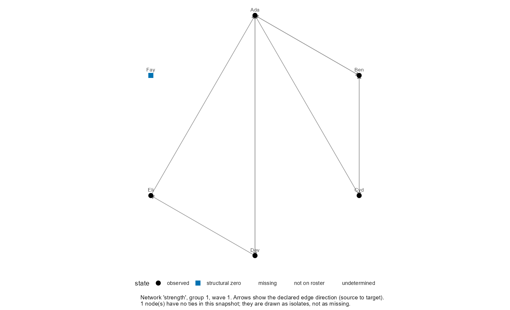
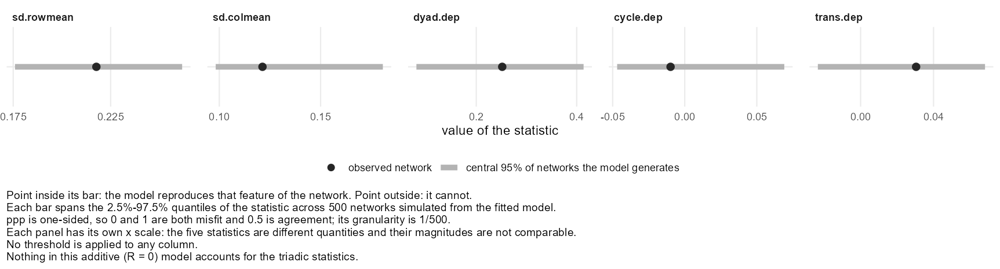
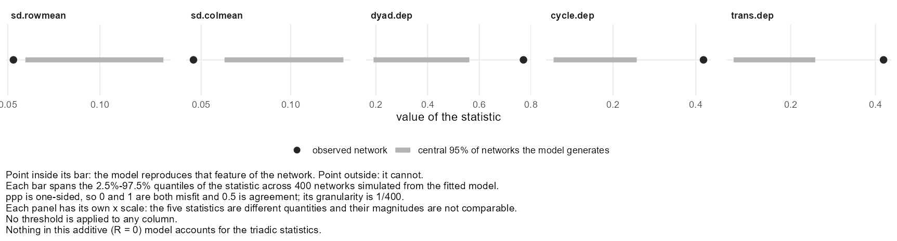
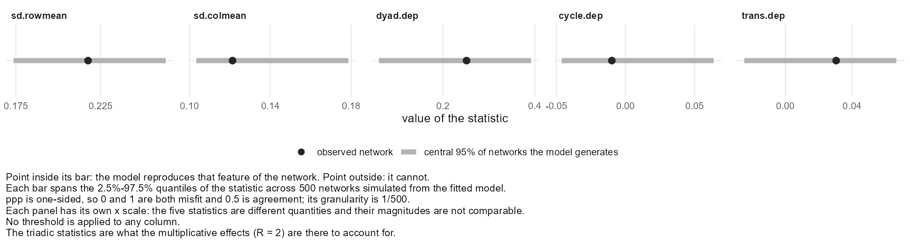

![]()
Welcome
rnetis puts two established families of social network model behind one data structure and one formula grammar: Influence, where a node characteristic changes with what the nodes around it were doing, and Selection, where a tie forms or persists as a function of who the sender and receiver are.
This tutorial works each one end to end, on data you build yourself out of two ordinary data frames. The two paths run in parallel and are self-contained, so start with whichever matches your question.
Please read this first
This page is shared for a workshop, and the software is not yet public. rnetis is proprietary software owned by Griffin Dynamics LLC. The full version is under review and will be released publicly in due course.
You are welcome to run the code in any distributable you have been given, on your own data, for your own work. Please do not redistribute the software, this page, or the materials that came with them, and please do not pass them on to anyone who was not given access directly.
If you would like to use rnetis in a project, would like to be told when it is released, or want to talk about a collaboration, write to Daniel Griffin at danieljgriffin618@gmail.com and we will send release information when it is available.
Path A · Influence
Does a person's outcome move toward the outcomes of the people they are tied to? Six pages: the question, the data, the model, the homophily problem, several groups, and what else is there.
Path B · Selection
What predicts a tie? Six pages, in the same shape: the question, the data, the model, additive and multiplicative effects, several groups, and what else is there.
If you have not used rnetis before, the overview says what the package is for and how to read this tutorial, and installation gets you a working session — including one that needs nothing installed on your own machine.
Overview
What rnetis is for, and how to read what follows.
Two questions that are usually studied apart
Ask whether people become like their friends and you are asking an Influence question: a characteristic of a node changes as a function of what the nodes around it were doing. Ask who becomes friends with whom and you are asking a Selection question: a tie appears, or persists, as a function of who the sender is, who the receiver is, and what the pair have in common.
In practice the two live in different toolchains, expect different data shapes, and leave the awkward middle step — turning a network and an attribute into a predictor — to code each analyst writes once and never shows anyone. rnetis puts both behind one data object and one formula grammar, so the awkward step is a term in a formula and the bookkeeping is the package's problem rather than yours.
The two questions are also each other's rival explanation, which is why this tutorial teaches them together even though you only need one. If people become like their friends, and people also befriend people already like them, then either mechanism on its own predicts the same cross-section. Each path names the other and says what it does about it.
Both paths run the same six steps
Whichever you pick, the shape is identical, and each page adds one idea to the one before it:
| Path A · Influence | Path B · Selection | |
|---|---|---|
| 1 | The question | The question |
| 2 | The data | The data |
| 3 | The basic model | The basic model (SRM) |
| 4 | The latent space | Additive and multiplicative effects (AME) |
| 5 | Several groups | Several groups |
| 6 | Everything else | Everything else |
Every model page ends by checking that model's own fit, rather than saving fit for one page at the end. What counts as a check is not the same on the two paths, and the pages say why at the point where it stops being the same.
You only need one path
They are independent. If Selection is your question you can start at Path B and never open Path A. The one place Path B points back is the geometry of the latent space, which Path A explains first because that is where it is first needed.
The equations are skippable
Every model page opens with its equation, with each part labelled, and then says the same thing again in words. If you want the code, skip the display and you will lose nothing you need. If you want to know exactly what is being estimated, the equation is the honest answer and the prose is the gloss.
What you need
- R 4.2 or later, and the rnetis package. If installing it locally is a problem, installation ends with a browser-based option.
- No compiler: rnetis is pure R.
- No data of your own. Everything here is either typed out in front of you or ships with the package.
How long it takes
Path A runs in seconds end to end; it is ordinary least squares and a mixed model, apart from the latent-space adjustment. Path B fits Markov chains through amen::ame(): at the settings used here a single-group fit took about fifteen seconds on the machine this page was built on, and the hierarchical model took about eight minutes. Reading carefully, rather than waiting for R, is what will take you an afternoon.
Every result on this page is real
The grey blocks are code. The block beneath each one is what R actually printed when that exact code was run, captured from a live session, including the warnings and the refusals. Nothing on this page was typed by hand to look like output. Where a number here differs from yours, the cause is a version or a seed, not an invention.
The drawn figures are the exception, and they are drawn precisely because they carry no numbers: a diagram of what a dyad is cannot disagree with a result, because it reports none. Every figure that does report an estimate is a plot made from a real fit.
rnetis reports quantities, not verdicts. No surface in the package prints “good fit” or “assumption satisfied”, and this tutorial does not either. Several pages end by naming what the result you have just produced does not establish. That is not hedging; it is the part of the analysis that usually goes unwritten.
Where everything else is
Reference material sits at the end: the formula terms, importing and exporting, the rest of the package and what rnetis refuses. The search box at the top searches every page at once, and Show all turns the whole tutorial into one long page for printing or for Ctrl-F.
Installation
rnetis is not on CRAN. It is distributed by Griffin Dynamics LLC to people it gives a copy to, so how you install it depends on what you were given.
Install it locally if you can — that is the section below, and it takes a couple of minutes. If your own machine fights you, Posit Cloud — the last section of this page — gives you R in a browser with nothing to install on your own machine.
Install it locally
Pick the card that matches what you were given.
1You were given a source tarball
Install the four required packages first. Installing from a file means repos = NULL, and R's dependencies argument is not used in that case — so nothing fetches generics, ggplot2, lme4 and reformulas on your behalf, and the install fails on the first one that is missing:
install.packages(c("generics", "ggplot2", "lme4", "reformulas"))
install.packages("rnetis_0.1.0.tar.gz", repos = NULL,
type = "source")Or let remotes do both, which resolves the dependencies from CRAN and then installs the file:
if (!requireNamespace("remotes", quietly = TRUE)) {
install.packages("remotes")
}
remotes::install_local("rnetis_0.1.0.tar.gz")A tarball is the right route for a workshop: it makes no GitHub API calls, so a room full of people installing at once cannot hit the rate limit that install_github() shares across everyone on the same network.
2You were given access to the repository
Installing from GitHub needs the remotes package, which is not part of R. The first line gets it if you do not already have it and does nothing if you do, so the pair is safe to run as written on any machine:
if (!requireNamespace("remotes", quietly = TRUE)) {
install.packages("remotes")
}
remotes::install_github("djgriffin13/rnetis")install_github() reads rnetis's DESCRIPTION and installs the four packages it requires — generics, ggplot2, lme4 and reformulas — without being asked. The optional ones below are a separate step.
3You have a local checkout
Also remotes, and the same guard applies:
if (!requireNamespace("remotes", quietly = TRUE)) {
install.packages("remotes")
}
remotes::install_local(".")
# or, while developing, without installing at all:
# pkgload::load_all(".")On build_vignettes = TRUE. You can pass it to either remotes call to build the package vignettes locally. It needs pandoc installed and adds several minutes, and nothing in this tutorial uses them — the vignettes cover the same ground from the package's side. Add it if you want browseVignettes("rnetis") to work offline.
Check that it worked
Whichever route you took, this is the check. If it prints a version, you are ready for Path A:
library(rnetis)
packageVersion("rnetis")[1] '0.1.0'
Four required packages come with rnetis — generics, ggplot2, lme4 and reformulas — and the install step pulls them from CRAN for you.
Where the R 4.2 floor comes from
rnetis's own code runs on R 4.1, and so does every required package — ggplot2 sets that floor and the other three go lower. The declared minimum is 4.2 because of an optional one: latentnet, which page 4 of Path A is built on, depends on ergm, and current ergm requires R ≥ 4.2.
Declaring 4.2 rather than 4.1 means that an install which succeeds can run every capability in the table below. The alternative was a package that installs on 4.1 and then cannot do one of the things this tutorial teaches.
Optional packages, by what they unlock
These are rnetis's suggested packages, which means no install step brings them in automatically — including dependencies left at its default. Each unlocks one capability, and rnetis names the one you need at the point you need it rather than failing with a missing-object error three calls later.
| Install | What it unlocks | Needed for |
|---|---|---|
install.packages("amen") | fit_selection() — the Selection model | All of Path B |
install.packages("latentnet") | latent() — the latent-space adjustment | Path A, page 4 |
install.packages("clubSandwich") | cluster-robust standard errors | Path A, page 5 |
install.packages(c("igraph", "network")) | importing from and exporting to igraph and statnet | Importing and exporting |
install.packages(c("sna", "numDeriv")) | the network-autocorrelation (SAR) estimator | The rest of the package |
To follow every page of this tutorial you want amen, latentnet, clubSandwich and igraph. One line gets them:
install.packages(c("amen", "latentnet", "clubSandwich", "igraph"))To see what you already have:
for (p in c("amen", "latentnet", "sna", "clubSandwich", "igraph", "network")) {
cat(sprintf("%-14s %s\n", p,
if (requireNamespace(p, quietly = TRUE)) "installed" else "not installed"))
}amen installed latentnet installed sna installed Registered S3 method overwritten by 'clubSandwich': method from bread.mlm sandwich clubSandwich installed igraph installed network installed
Or get everything in one call. remotes::install_github("djgriffin13/rnetis", dependencies = TRUE) installs every suggested package, which is the simplest thing to run and the right choice when you are building a machine for a workshop.
What dependencies = TRUE costs, exactly
Three numbers, counting each package and everything it pulls in turn. rnetis and its four required packages is 40 packages. Adding the four above takes it to 74. dependencies = TRUE takes it to 102.
The 28-package difference is testthat, knitr and rmarkdown and their dependencies — bslib, callr, htmltools, processx, tinytex and the rest. They exist to run rnetis's test suite and build its vignettes rather than to use the package. All are pure R and install in seconds from a binary repository, so the cost is disk and tidiness rather than time.
There is no way to say “Suggests except those three”: dependencies takes TRUE for all of them, NA for none, or an explicit set of fields. Naming the four packages is the way to get the useful ones alone.
If your own machine will not cooperate
Posit Cloud runs R and RStudio in a browser tab. It is worth knowing about for two situations: a managed laptop that will not let you install anything, and an afternoon you would rather spend on the models than on a toolchain.
There is no prepared project to join — you make your own, and it is yours. Sign up for a free account, create a new project, and run exactly the same commands as above. A cloud session is an ordinary R installation; nothing else on this page changes.
Two things to know before relying on it. The free plan caps how much compute you can use per month and gives each project a modest amount of memory, and the current limits are on posit.cloud. Everything in Path A is comfortable inside them; Path B fits Markov chains, and the hierarchical model on its fifth page is the one piece of this tutorial substantial enough to feel a ceiling. Run that one early if you are working in the cloud, so a limit is something you meet with time to spare.
Other ways to run R without installing it
Binder builds a throwaway session from a repository and a configuration file, and needs no account at all. Sessions are ephemeral and slow to start, and the configuration has to be prepared in advance.
A container. For a session you can reproduce exactly in a year, a rocker/rstudio image with rnetis and its dependencies pinned is the honest version of that promise, and it runs the same on a laptop and on a server. It costs a Docker install, which is the wrong trade for an afternoon and the right one for a long project.
Influence: the question
Before any code: what a claim of social influence actually says, what would make it false, and why the obvious way to look for it cannot work.
A1.1 What influence means
The claim is this. A person's characteristic — a belief, a behaviour, a level of engagement, a score on some scale — moves over time toward the characteristic of the people they are connected to. Not toward the population average, and not toward some abstract norm: toward their own alters, who are a particular and usually unrepresentative handful of people.
That is a claim about a mechanism, and three different mechanisms are usually meant by it. Conformity: I adjust toward what I see around me because being out of step is costly. Social learning: my alters know things I do not, and I update on their behaviour as evidence. Contagion: something transmits through contact, with no inference on my part at all.
These are not interchangeable, and the difference is not philosophical. Conformity is about what is typical among the people I see, so what matters is the average alter. Contagion is about dose, so what matters is the total reaching me — and a person with twenty infected contacts is in a different position from one with two, even if both have the same average. Page 3 asks you to choose between those two as a modelling decision, and the choice is made here, on substantive grounds, rather than there on statistical ones.
A1.2 Why one occasion cannot answer it
Suppose you have a network and a score for everyone, measured once, and you find that connected people have similar scores. You have found something real. You have not found influence.
At least three processes produce that pattern, and a single occasion cannot tell them apart:
- Influence. They were different, they are connected, and they converged.
- Homophily. They were always similar, and that similarity is why they became connected in the first place.
- Shared context. They sit in the same team, the same classroom, the same shift. Whatever acts on one acts on the other, and the tie between them is a symptom of the shared setting rather than a channel between them.
All three predict the same correlation. The correlation is therefore evidence for the conjunction of them and for none of them individually, which is why a cross-sectional network study of influence is not a study of influence.
What breaks the tie is time. If you know what someone was before, you can ask whether where they ended up depends on who they were connected to then — and a score measured before the exposure cannot have been caused by it. Two occasions is the minimum that supports the question, and this tutorial is built on two throughout. Page 2 introduces waves on exactly that footing, and Path B makes the same argument from the other side, where the sharper constraint is why you cannot simply use more waves.
A1.3 The hypothesis, stated so it could fail
A hypothesis you cannot imagine failing is not doing any work. So, concretely, this is what the model on page 3 tests:
H1. Conditional on a person's own earlier score, the scores of the people they were connected to at that earlier occasion predict their later score.
The clause before the comma is doing most of the work and is the part most often dropped. Without it, the coefficient on exposure absorbs every stable difference between people, including whatever made them the kind of person who has those alters. With it, the quantity being modelled is change.
Under the null, that coefficient is zero: knowing what your alters were like adds nothing once we know what you were like. A positive coefficient is the influence claim. And a negative coefficient is not a failed study — it is differentiation, people moving away from their alters, which is a real and well-documented social process and which this model is perfectly capable of reporting. Decide now which of the three you would believe, because deciding afterwards is how a sign flip becomes a theory.
A1.4 The rival explanation, named now rather than later
Adding a second wave does not dispose of homophily; it only makes it harder to see. If people choose alters who are similar on something you did not measure, and that same unmeasured thing also drives the outcome, then exposure predicts the outcome through a path that is not influence at all — and conditioning on the earlier score does not close it, because the unmeasured trait is still there and still acting. Shalizi and Thomas (2011) give the general form of the argument.
That is not a reason to stop, and it is not something this page can settle. It is a reason to be precise about what H1's coefficient is: an association, under a stated conditioning set. Page 4 takes the problem up properly.
A1.5 What this path answers, and what it does not
By the end of Path A you will have an exposure coefficient, an interval around it, an effect size on the outcome's own scale, a version of the same estimate with latent positions controlled, a version that respects the fact that your people sit in groups, and a set of fit statistics that are honest about what they cover.
What you will not have is a causal claim. Nothing in rnetis will give you one, and nothing on this path will print a verdict. What it will do is make the conditioning set explicit, keep the estimand — the quantity being estimated, as distinct from the number that comes out — stable while you vary the model, and refuse — by name, with the reason — where the thing you asked for is not identified from the data you have.
Two refusals you will meet on this path, mentioned here so they do not read as bugs when they arrive. A network with unresolved missing dyads refuses multi-step exposure, because an unknown tie two steps out is not the same as an absent one. And a model whose exposure term is contemporaneous with its outcome refuses an estimator that cannot handle simultaneity, rather than returning the number you would have got if it could.
Nodes, ties and waves
A six-person team, built by hand from two data frames printed in full, and carried through direction, zero-versus-missing, and the two declarations that change every number downstream.
A2.1 What a netis_data is made of
Two data frames go in and one object comes out. The first frame says who the people are and what was measured on them, one row per person per occasion. The second says who reaches whom, one row per observed tie. Both are the kind of frame a survey platform or a spreadsheet hands you.
What the object adds is the third thing in that picture: the declarations. Which column marks the occasion. What a zero in the tie column means — a measured absence, or a pair that was never asked about. Who was on the roster, so that a person with no ties can be distinguished from a person who was never observed. Those are not properties of the two frames; they are things only you know, and the object is where you say them once instead of remembering them at every later step.
A2.2 The node table, typed out
Six people on a team, measured twice. wellbeing is the outcome we will model, tenure is a covariate, and wave says which occasion a row belongs to. Every value is on the page, so nothing later in this tutorial depends on data you cannot see:
# One row per person per occasion. "node" names the person; everything
# else is a variable measured on them.
people <- data.frame(
group = 1,
node = c("Ada", "Ben", "Cyd", "Dev", "Eli", "Fay"),
wave = rep(1:2, each = 6),
wellbeing = c(50, 10, 20, 30, 40, 60, # wave 1
44, 14, 22, 31, 38, 58), # wave 2
tenure = c(8, 1, 3, 6, 2, 4, # years; does not change
8, 1, 3, 6, 2, 4)
)
peoplegroup node wave wellbeing tenure 1 1 Ada 1 50 8 2 1 Ben 1 10 1 3 1 Cyd 1 20 3 4 1 Dev 1 30 6 5 1 Eli 1 40 2 6 1 Fay 1 60 4 7 1 Ada 2 44 8 8 1 Ben 2 14 1 9 1 Cyd 2 22 3 10 1 Dev 2 31 6 11 1 Eli 2 38 2 12 1 Fay 2 58 4
Twelve rows for six people, because a node table holds one row per person per occasion rather than one row per person. That shape is what lets a variable change between waves — and it also lets one stay still, which tenure does here. Nobody has to say which is which; §A2.4 shows rnetis working it out.
A2.3 The tie table, typed out
Nine advice relationships. source is the person the relation comes from and target the person it goes to, so the first row says Ben gives advice to Ada:
# One row per tie. "source" is the person the relation comes FROM and
# "target" the person it goes TO: this row says Ben gives advice to Ada.
advice <- data.frame(
group = 1,
source = c("Ben", "Cyd", "Dev", "Eli", "Ada", "Cyd", "Ben", "Dev", "Ada"),
target = c("Ada", "Ada", "Ada", "Ada", "Ben", "Ben", "Cyd", "Eli", "Dev"),
strength = c( 1, 3, 2, 1, 2, 1, 1, 1, 1)
)
advicegroup source target strength 1 1 Ben Ada 1 2 1 Cyd Ada 3 3 1 Dev Ada 2 4 1 Eli Ada 1 5 1 Ada Ben 2 6 1 Cyd Ben 1 7 1 Ben Cyd 1 8 1 Dev Eli 1 9 1 Ada Dev 1
Those nine rows were not chosen at random. They carry four separate lessons that arrive later as consequences rather than assertions:
- Ada appears as
targetfour times — Ben, Cyd, Dev and Eli all give her advice. She is the only person here with enough in-neighbours for an average to mean anything, which makes her the row to watch on page 3. - Ada and Ben appear in both orders, and so do Ada and Dev. Two mutual dyads, which §A2.5 uses.
- Fay is not in this table at all. She is on the roster and nobody gives her advice; she gives none either. She is why row-normalised exposure has to return
NArather than0. strengthvaries — Cyd's advice to Ada is weighted 3, Eli's 1. A weighted network behaves differently from a binary one under almost every operation, which is why §A2.4 makes you say so.
A2.4 Building the object
Two frames in, one object out. wave_col names the occasion column. tie_meta is where you say what a tie value means — that strength is a weight rather than a code, what kind of weight, and what a zero would signify if there were one:
# Two data frames in, one object out. `wave_col` names the occasion
# column; `tie_meta` is where you say what a tie value means.
team <- netis_data(
node_data = people,
tie_data = advice,
wave_col = "wave",
tie_meta = list(strength = list(
weighted = TRUE,
weight_semantics = "strength",
zero_meaning = "measured_zero"))
)
team<netis_data>
6 nodes in 1 group, 9 ties, directed, 2 waves, self-ties prohibited
node variables: static: tenure; dynamic: wellbeing
tie variables: static: strength
tie network semantics:
strength: weighted, row_presence (inferred)
no group_data suppliedRead the printed summary rather than skipping it; it is the object telling you what it concluded. Six nodes, one group, nine ties, directed, two waves, self-ties prohibited. Then the line that matters most:
node variables: static: tenure; dynamic: wellbeingNobody told it that. It compared each variable across waves, found that tenure never moves and wellbeing does, and recorded the distinction — which is what later lets ar() know there is an earlier value of wellbeing to reach back to, and lets it refuse if you ask for a lagged tenure, which would be the same number twice. You can ask it directly:
# rnetis worked out which variables move with the wave and which do not.
# `advice` has no wave column at all, so the network is one static
# structure observed across both occasions.
netis_schema(team)$node_vars
netis_schema(team)$tie_vars$static [1] "tenure" $dynamic [1] "wellbeing" $static [1] "strength" $dynamic character(0)
The tie side reports strength as static and nothing as dynamic, because advice has no wave column at all. That is a modelling statement, not an oversight: one network, observed once, taken to hold across both occasions. If you had measured the network twice you would add a wave column to the tie table and this line would change.
A2.5 Direction: source, target, and what makes a dyad mutual
This is the section the rest of the tutorial points back to, so it is worth landing on properly.
A tie has a direction, and the direction is not a formality. Dev → Ada says advice flows from Dev to Ada. For an influence model that means Dev's score is part of what reaches Ada, and Ada's is not part of what reaches Dev. Get the convention backwards and every exposure value on the next page is wrong in a way no diagnostic will catch, because the numbers remain perfectly plausible.
A dyad is the pair, taken together, and it has three possible states: nothing, one arrow, or two. When both arrows are present the dyad is mutual — and mutuality is a property of the pair rather than of either person in it. Ada and Ben have it. Cyd and Ada do not, because Cyd advises Ada and Ada does not advise Cyd:
# Of the nine ties, how many are matched by one going the other way?
compute_network_stat(team, "strength", "reciprocity", wave = 1)
# Ada -> Ben and Ben -> Ada are both present, so that dyad is mutual.
# Cyd -> Ada is not matched by Ada -> Cyd, so that one is asymmetric.
A <- netis_adjacency(team, "strength", wave = 1)
A["Ada", "Ben"]; A["Ben", "Ada"]
A["Cyd", "Ada"]; A["Ada", "Cyd"]group net_reciprocity_strength 1 1 0.66667 [1] 2 [1] 1 [1] 3 [1] 0
Two thirds of the ties here are reciprocated. The four lookups underneath are the same fact one pair at a time: A["Ada", "Ben"] is 2 and A["Ben", "Ada"] is 1 — both nonzero, so that dyad is mutual and the two directions carry different weights. A["Cyd", "Ada"] is 3 while A["Ada", "Cyd"] is 0: one arrow, no reciprocation.
On reading the adjacency matrix. netis_adjacency() returns it in the orientation rnetis uses internally, and the entry you index as A[i, j] is the tie from i to j as your tie table declared it. You never have to decide whether a matrix is "row sender" or "row receiver" — that decision was made once, at import, from the source and target columns, and nothing downstream re-opens it.
Collapsing the two directions is not one operation
Sooner or later you will want to treat the network as undirected. On a binary network that is nearly unambiguous. On a weighted one it is not, and rnetis will not choose for you:
# Collapsing the two directions into one is several different operations
# on a weighted network, so rnetis will not pick one.
compute_exposure(team, content = "wellbeing",
via = symmetrize("strength"), wave = 1)Error: symmetrize() requires rule =, one of "max", "min", "sum", "mean", "any", "both". They are different operations on a weighted network, so none of them is assumed.
Ada and Ben are tied at 2 in one direction and 1 in the other. Is their undirected strength 2, 1, 3, or 1.5? Each answer is defensible and each answers a different question — the strongest channel, the weakest, the total flow, the typical level. symmetrize("strength", rule = "max") gets you the first. What you cannot do is leave it unsaid.
A2.6 Two declarations that change every number downstream
Look again at what the object printed in §A2.4. Two words in it are doing more work than they appear to:
6 nodes in 1 group, 9 ties, directed, 2 waves…strength: weighted, row_presence (inferred)
Directed or symmetric, and weighted or binary. Each names a different quantity, and you declare which one you measured.
Directed or symmetric
A directed relation distinguishes i→j from j→i. Advice does: Cyd advises Ada and Ada does not advise Cyd, and collapsing that loses the fact. Co-presence does not: if we were in the same room, we both were, and storing it twice would be storing one fact twice.
The declaration follows the relation, not your convenience. Get it wrong in one direction and you discard real asymmetry; wrong in the other and one tie is counted as two observations. On Path B that second mistake is refused outright rather than fitted.
Weighted or binary
A weighted tie carries a magnitude — Cyd's advice to Ada is a 3, Eli's a 1. A binary tie records only that the relation exists. weight_semantics goes further and says what the magnitude is: a strength, a count, a duration, a distance. That matters because a distance runs the opposite way to a strength, and a conduit built from one is not the same object as a conduit built from the other.
You can always go from weighted to binary — binarize(), with a rule you name — and never the other way. §A6.5 shows what that conversion does to the numbers: it re-ranks the actors.
Both declarations are recorded as declared or inferred, and §A2.9's netis_boundary() is where you check which. An inferred declaration is not wrong, but it is a guess the package made and is telling you about.
A2.7 Zero, missing and structurally absent are three things
A tie table has rows for the pairs that are in it. What it does not say, and cannot say by itself, is what the absence of a row means. There are three possibilities and they are not interchangeable:
- An observed non-tie. You asked, and the answer was no. This is data, and a zero is the right representation of it.
- An unobserved pair. You never asked, or they did not answer. This is missing, and treating it as a zero invents an answer nobody gave.
- A structural zero. The tie could not exist — the pair was never on the roster together, or one of them had left. The absence is a property of the design, not of the people.
Nothing about the shape of a data frame distinguishes these. Only you know which one you have, which is why netis_data() asks and why it refuses to guess. Here is the same question made concrete. Three people, every ordered pair asked about, two relationships reported and four explicit noes:
# Three people, and every ordered pair asked about. Two pairs have a
# relation; the other four were asked and answered no. The zeros are
# data, and they are in the table.
who <- data.frame(group = 1, node = c("a", "b", "c"))
full <- data.frame(group = 1,
source = c("a", "a", "b", "b", "c", "c"),
target = c("b", "c", "a", "c", "a", "b"),
r = c( 1, 0, 1, 0, 0, 0))
fullgroup source target r 1 1 a b 1 2 1 a c 0 3 1 b a 1 4 1 b c 0 5 1 c a 0 6 1 c b 0
Six rows for six ordered pairs, four of them zero. Now read those identical rows two ways. Under row_presence, a row is a tie — the zeros are counted as ties and the network comes out complete. Under a value_rule, a zero row is an observed non-tie:
# The same six rows under the two readings. "row_presence" means a row
# IS a tie, so the four zeros are counted as ties and the network looks
# complete. "value_rule" says a zero row is an observed non-tie.
rows <- netis_data(who, full,
tie_meta = list(r = list(presence_mode = "row_presence")))
vals <- netis_data(who, full,
tie_meta = list(r = list(presence_mode = "value_rule",
presence_rule = function(value) value != 0)))
compute_network_stat(rows, "r", "density")
compute_network_stat(vals, "r", "density")group net_density_r 1 1 1 group net_density_r 1 1 0.33333
A density of 1 against a density of 0.33, from the same six rows. That is the entire lesson, and it is not a corner case: it is a factor of three in the thing most network statistics are built on. The data did not change. What changed is a declaration about what the data means, and the declaration is yours to make.
Which is why the third possibility — saying every pair was observed without saying which rows count as ties — is not enough. rnetis takes the object happily, and then puts the question to you at the first moment it actually needs the answer:
# Saying every pair was observed is not enough on its own: rnetis still
# needs to know which of those rows counts as a tie. The object builds,
# and the question is put to you the moment something needs the answer.
cd <- netis_data(who, full,
tie_meta = list(r = list(presence_mode = "complete_dyadic")))
compute_network_stat(cd, "r", "density")Error: Edge presence for 'r' is undetermined: this network is declared presence_mode = "complete_dyadic" (rows exist regardless of tie status), but no presence_col or presence_rule was supplied to say which rows are actually present. Say which in netis_data(). If a nonzero value means a tie, pass: tie_meta = list(r = list(presence_mode = "value_rule", presence_rule = function(value) value != 0)) If a column of your tie table says so, pass: tie_meta = list(r = list(presence_mode = "indicator", presence_col = "<column>")) If every row is a tie, whatever its value, pass: tie_meta = list(r = list(presence_mode = "row_presence"))
Notice the shape of that refusal. It does not say "invalid argument". It names what is undetermined, says why the declaration you gave is insufficient, and prints the three things you might have meant with the exact code for each. The refusal is where the design decision gets made, rather than where it gets lost.
And the case where the row simply is not there
Both readings above had a row for every pair. Drop the four zero rows and the picture changes again — and this is the case most real data arrives in:
# And now the third case: the pair is not in the table at all. Under
# "row_presence" that is simply not a tie. Under "complete_dyadic" the
# claim is that it WAS observed, so an absent pair is a measured zero.
# Neither of those is "we do not know", which is what a genuinely
# unobserved pair is -- and that is why the declaration is yours.
thin <- full[full$r == 1, ]
thin
compute_centrality(
netis_data(who, thin,
tie_meta = list(r = list(presence_mode = "row_presence"))),
"r", "degree", mode = "in")group source target r 1 1 a b 1 3 1 b a 1 group node cent_degree_r 1 1 a 1 2 1 b 1 3 1 c 0
Under row_presence, c has an in-degree of 0: no row names c as a target, so c receives nothing. That is the right answer if the table is a complete record of the relationships that exist. It is the wrong answer if c was never asked — in which case the honest value is not 0 but unknown, and a 0 here would be an invention you then regress on.
rnetis cannot tell those apart from the table, and neither can anyone else. What it can do is make you say which you have, once, at the point of building the object — and then be consistent about it everywhere downstream. Fay, on our own team, is the benign version of this: she is on the roster, she has no ties, and the object knows both facts separately.
A2.8 Waves and time
A wave in rnetis is positional: wave 1 came before wave 2, and that is all the model needs. If your occasions have real dates, keep them — they are metadata, useful for reporting and for deciding whether a lag is substantively sensible — but the model orders by position.
That is a deliberately modest commitment: rnetis never has to decide whether an eleven-month gap and a thirteen-month one are the same interval, and it never silently treats unequal spacing as equal. What it costs is that nothing here models time as a continuous quantity.
This tutorial uses two waves everywhere. That is the minimum §A1.2 argued for, and on Path B it is also the maximum rnetis will fit — page 1 of Path B explains why.
A2.9 Or bring your own
Everything above typed the data in. Real data arrives in some other shape, and the importers take it from there — the object is the same either way, and so is everything after it:
| You have | Use |
|---|---|
| An edge list | netis_data_from_edgelist() |
| An adjacency matrix | netis_data_from_adjacency() |
| One matrix per wave | netis_data_from_adjacency_series() |
An igraph object | netis_data_from_igraph() |
A network / statnet object | netis_data_from_network() |
| Something else tabular | as_netis_data() |
Going out is as easy, and the tables come back exactly as they went in — no renaming, no reordering, no silently added columns:
# and straight back out again, unchanged
netis_nodes(team)[1:3, ]
netis_ties(team)[1:3, ]group node tenure wave wellbeing 1 1 Ada 8 1 50 2 1 Ada 8 2 44 3 1 Ben 1 1 10 group source target strength 1 1 Ben Ada 1 2 1 Cyd Ada 3 3 1 Dev Ada 2
What is worth knowing is that a conversion is a place where meaning can be lost, and rnetis keeps a record of it rather than letting it pass. An igraph object does not carry a notion of what a zero means or who was on the roster; when you import one, those facts have to come from somewhere, and the object records whether each was declared by you or inferred:
netis_boundary(team)<netis_boundary>
built directly by netis_data(); no conversion boundary was crossed
directedness: declared (by the caller)
network semantics:
strength:
weighted TRUE declared
weight_semantics strength declared
direction_semantics <none> undeclared
zero_meaning measured_zero declared
presence_mode row_presence inferred [row_completeness_vs_roster]Read the right-hand column. weighted, weight_semantics and zero_meaning say declared — we passed them in tie_meta. presence_mode says inferred, with the rule that produced it in brackets. Nothing here is hidden, and nothing was assumed quietly. Importing and exporting has the full set, including what netis_losses() reports when a conversion genuinely drops something.
| You have | Use |
|---|---|
| An edge list | netis_data_from_edgelist() |
| An adjacency matrix | netis_data_from_adjacency() |
| One matrix per wave | netis_data_from_adjacency_series() |
| An igraph object | netis_data_from_igraph() |
| A network object | netis_data_from_network() |
| Something else tabular | as_netis_data() |
A2.10 Look at it before modelling it
Drawing the network is the cheapest check available on whether the object you built is the one you meant, and on a team this size you can verify it against the tie table above, row by row.

Four things in that picture are worth naming, because each one returns later as a modelling decision rather than a drawing:
- Ada has four arrows coming in. Ben, Cyd, Dev and Eli all name her. That makes her the one person on this team with enough alters for exposure to be an average of anything, and she is the row to watch on page 3.
- Ada and Ben point at each other, and so do Ada and Dev. Two mutual dyads. Mutuality is a property of the pair, not of either person, and §A2.5 is where that stops being obvious.
- The arrows have directions, and they are not decorative. Dev → Ada means advice flows from Dev to Ada, so Dev's score is part of what reaches Ada and not the other way round. Reverse the convention and every exposure on the page changes.
- Fay is drawn as a square, off on her own. She is on the roster and she has no ties. That is a different fact from being absent, and the caption the package writes underneath says so in as many words: they are drawn as isolates, not as missing.
Fay is the whole of §A2.7 in one node. She has no alters, so there is nothing to average over her — and the honest answer to "what is Fay's exposure?" is not zero. Zero would say her contacts scored nothing. The answer is that the question does not apply, and page 3 shows rnetis returning NA for her and explains why that is the right refusal.
A2.11 And check what the picture cannot show you
A drawing shows what is there. It cannot show you a variable with no variance, or a person who is in the roster but in no tie at any wave, or a wave where half the outcome is missing. diagnose_data() is for those. On a clean object it says so and stops:
diagnose_data(demo_influence)<netis_diagnostics: no findings>
On a rougher one it names what it found, with a severity on each:
rough_nodes <- data.frame(group = 1, node = letters[1:8],
wave = rep(1:2, each = 8),
y = c(0.4, -1.2, 0.9, 0.1, -0.6, 1.4, 0.2, -0.3,
0.8, -0.9, 1.1, 0.5, -0.2, 1.8, NA, 0.1),
x = 1)
rough_ties <- data.frame(group = 1, source = c("a", "b", "c"),
target = c("b", "c", "d"), tie = 1)
rough <- netis_data(rough_nodes, rough_ties, wave_col = "wave")
diagnose_data(rough)<netis_diagnostics: 0 ERROR, 0 WARNING, 2 NOTE> [NOTE/data] 4 node(s) have no ties in either direction at any wave: e, f, g, h. [NOTE/data] Numeric node variable(s) with no variance across the entire dataset: x. Such a variable cannot contribute to any model that relies on variation to identify an effect.
Two notes, no errors and no warnings. Four people are in the roster and in no tie at all — which may be exactly right, or may mean a merge dropped their rows, and only you can tell. And x has no variance anywhere, so it cannot contribute to any model that identifies an effect from variation; a regression will happily return a coefficient for it, and that coefficient will mean nothing.
Neither of those is a verdict, and neither stops you. A NOTE is something worth a look, a WARNING is something that will affect a result, and an ERROR is something that makes the next step impossible. filter_diagnostics() narrows the list when it gets long. What the function will never do is decide on your behalf that a finding is acceptable.
The basic influence model
Built one term at a time. The whole formula is not assembled until §A3.5, by which point every part of it has been explained on its own.
A change of dataset, and why. The six-person team taught you what the object is made of, and it is about to stop being useful: six people, one of whom has no alters, is five usable rows against three parameters. Nothing is wrong with the team — it is the wrong size for estimating anything. From here the examples use demo_influence, which ships with the package and has exactly the same structure: thirty people, two waves, one directed network, one outcome y. Everything you learned about netis_data carries over unchanged. Exposure examples stay on the team a little longer, because there you can check the arithmetic by hand.
A3.1 The equation
Here is the whole model. Four terms, and each of the next three sections takes one of them:
Reading it left to right:
| Term | What it is | Under the null |
|---|---|---|
| yᵢ(t₂) | person i's score at the later wave — what we are explaining | — |
| β₁·yᵢ(t₁) | their own score at the earlier wave | not zero; people are usually like they were |
| β₂·Eᵢ(t₁) | exposure: a summary of what their alters scored earlier | zero — this is the hypothesis |
| β₃·xᵢ(t₁) | any other covariate, measured earlier | whatever the covariate deserves |
| εᵢ | everything else | — |
Only one row of that table is the hypothesis. β₂ is what we came for; everything else is there to make β₂ mean something. Drop β₁ and exposure starts absorbing every stable difference between people. Drop β₃ and it absorbs whatever the covariate would have explained. The model is mostly scaffolding around a single number, and that is normal.
A3.2 Exposure — Eᵢ(t₁)
Exposure is the one quantity in this model that does not exist in your data. It has to be built, and building it is where the network enters an otherwise ordinary regression. The idea is due to Friedkin and Johnsen: for each person, summarise what the people they are connected to scored, and use that as a predictor.
Two things in that picture do the work. Each alter brings a value — their score on the thing being transmitted, shown as colour. And each tie has a weight — how much of it reaches the ego, shown as thickness. Exposure multiplies the two and combines them. What “combines” means is the next decision, and it is not a technicality.
The three modes are three different estimands
Take Ada, who gets advice from four people. There are three defensible answers to “how much wellbeing reaches Ada”, and they are answers to three different questions:
| Mode | What it computes | The question it answers |
|---|---|---|
sum (default) | Σⱼ Wᵢⱼ xⱼ | How much reaches me in total? |
mean | (1/nᵢ) Σⱼ Wᵢⱼ xⱼ | What are my contacts like, on average? |
row (row-normalised) | Σⱼ Wᵢⱼ xⱼ / Σⱼ Wᵢⱼ | What is the weighted average of what reaches me? |
Section A1.1 is where you choose. If the mechanism is contagion — dose, accumulation, load — then sum is right, and a person with four advisors genuinely is in a different position from one with one. If the mechanism is conformity — what is normal around me — then a total is the wrong shape entirely, because having more advisors would make you more extreme rather than better informed, and you want an average. Row-normalisation is Leenders' version of that average, weighting each alter by the strength of the tie.
Here is the difference on our own team, which is small enough to check by hand. First sum:
compute_exposure(team, content = "wellbeing", via = "strength", wave = 1)group node ex_wellbeing_strength 1 1 Ada 170 2 1 Ben 120 3 1 Cyd 10 4 1 Dev 50 5 1 Eli 30 6 1 Fay 0
Ada gets 170. Four advisors: Ben at strength 1 scoring 10, Cyd at 3 scoring 20, Dev at 2 scoring 30, Eli at 1 scoring 40 — (1×10) + (3×20) + (2×30) + (1×40) = 170. Cyd contributes 60 of that, more than anyone, because the tie is weighted 3 and not because Cyd scores highly. Ben gets 120 from a single strong tie to Ada.
Now the same network, row-normalised:
compute_exposure(team, content = "wellbeing", via = "strength",
normalize = "row", wave = 1)group node ex_wellbeing_strength 1 1 Ada 24.286 2 1 Ben 40.000 3 1 Cyd 10.000 4 1 Dev 50.000 5 1 Eli 30.000 6 1 Fay NA
Ada drops to 24.3 — 170 divided by the total tie weight of 7 — and Ben is now higher than Ada at 40.0. Under sum Ada looked far more exposed than anybody; under row she is below average, because her four advisors are, on average, people who score low. The two columns rank the same six people differently. Neither is wrong. They are answers to different questions, and a model fitted to one does not estimate the other.
Never silently. rnetis will not normalise, binarise or reverse a network on your behalf. Every one of those is a choice with a substantive meaning, and the package's position is that a choice with a substantive meaning belongs in your code where a reader can see it.
Direction is part of the question too
Exposure reads the network in the direction you declared: advice flows from the giver to the receiver, so what reaches Ada comes from the people who advise her. Reverse it and you are asking something else entirely — not what reaches Ada through her advisors, but what reaches her through the people she advises:
# The default reads a stored tie as "source influences target". Reversing
# it asks a different question of the same data: not what reaches Ada
# through the people who advise her, but what reaches her through the
# people she advises.
compute_exposure(team, content = "wellbeing", via = "strength",
direction = "target_influences_source", wave = 1)group node ex_wellbeing_strength 1 1 Ada 50 2 1 Ben 70 3 1 Cyd 160 4 1 Dev 140 5 1 Eli 50 6 1 Fay 0
Ada falls from 170 to 50; Cyd rises from 10 to 160. Same data, same function, opposite reading. There is a real research question behind the reversed version — teaching changes the teacher — but it is not the question the default answers, and the only way to get it is to ask for it by name.
The helper, and the term that is not it
Everything above used compute_exposure(), which returns exposure as an ordinary column you can look at. That is exactly what it is for, and it is worth doing once on your own data to see that the numbers are sane.
It is not how you fit a model. In a model you write exposure() inside the formula, so that the lag, the missingness mask and the provenance record travel with the fit instead of living in a variable you have to remember to keep in step. compute_exposure() is for looking; exposure() is for fitting. After this section the helper does not appear again.
Fay, and why NA is not zero
Look again at the row-normalised table. Fay is NA.
That is the whole of §A2.7 arriving where it bites. Row-normalisation divides by the total weight of the ties coming in, and Fay has none, so the denominator is zero and the quantity is undefined. Not small. Not zero. Undefined — there is no set of alters to average over, so the question “what is the average score of Fay's advisors” has no answer.
rnetis's default is to say so. You can override it, and the override is instructive:
# "zero" says an isolate belongs at zero on the scale. Here wellbeing
# runs from 10 to 60, so zero is not a neutral value -- it is off the
# bottom of the observed range, and Fay would be the most extreme case
# in the dataset purely because nobody advises her.
compute_exposure(team, content = "wellbeing", via = "strength",
normalize = "row", isolate_rule = "zero", wave = 1)group node ex_wellbeing_strength 1 1 Ada 24.286 2 1 Ben 40.000 3 1 Cyd 10.000 4 1 Dev 50.000 5 1 Eli 30.000 6 1 Fay 0.000
Now Fay is 0.000, and that number is a lie with a plausible face. Wellbeing on this team runs from 10 to 60. Zero is not a neutral point on that scale — it is off the bottom of it. Declaring Fay's exposure to be zero makes her the most extreme case in the dataset, and she earns that distinction purely by having no advisors. Fit a model on this column and Fay will pull the slope, hard, for a reason that has nothing to do with influence.
The third option refuses outright, which is the right default when you did not expect isolates at all:
compute_exposure(team, content = "wellbeing", via = "strength",
normalize = "row", isolate_rule = "error", wave = 1)Error: Row-normalization requested but 1 node(s) have no reference-set members (isolates), so their normalized exposure denominator is undefined: Fay. Set isolate_rule to "na" or "zero", or use normalize = "none".
Three behaviours, one argument, and the refusal names the other two. The reason there is no clever default here is that there is no clever answer: what to do with an isolate depends on what an isolate means in your design, and that is not in the data.
A3.3 The prior level — ar()
ar() puts the person's own earlier score on the right-hand side. It is one short term and it is not optional, for two separate reasons.
It makes the estimand change rather than level. Without it, β₂ is asked to explain where people are, and people are mostly where they were. Every stable difference between them — disposition, circumstance, whatever made them the kind of person who has those alters — is sitting unexplained in the outcome, and exposure will absorb as much of it as it correlates with. With ar() in the model, β₂ is asked a much narrower and much more interesting question: given where you started, does who you were connected to predict where you ended up?
It absorbs regression toward the mean. Extreme scores drift back toward the middle on remeasurement whether or not anything happened to them. If the people with extreme scores also have distinctive alters — and they usually do — that drift will look like influence unless the earlier score is in the model to soak it up.
ar() takes a lag, defaulting to 1, meaning the immediately preceding wave. With two waves that is the only possibility. The argument exists for designs with more, where the reader has to say whether “earlier” means last time or the start.
A3.4 Lagged covariates — lagged()
lagged(x) puts a covariate into the model at its earlier value. The lag is not a formality here either.
A covariate measured at the same occasion as the outcome is contaminated by it. If x is job satisfaction and y is wellbeing, then satisfaction at wave 2 is partly a consequence of wellbeing at wave 2 — and conditioning on a consequence of your outcome distorts every other coefficient in the model, including the one you came for. Measured at wave 1 it cannot have been caused by a wave-2 outcome, and the ordering does the work.
What belongs here: anything you think drives the outcome and might also be related to who people are connected to. What does not: anything that is itself a consequence of the outcome, and anything that does not vary, since a constant column identifies nothing — §A2.11's diagnose_data() note is exactly that case.
A3.5 Running the analysis
Now the whole thing. Before the code, read the formula and check it says what you mean:
y ~ ar() + exposure(y, via = tie, normalize = "row")Left of the ~ is the outcome, y, taken at the later wave. Then ar() for the person's own earlier y. Then the exposure term, which reads as: take y as the content being transmitted, carry it along the network called tie, and row-normalise. Three choices, all three written down.
data = takes the netis_data. There is no waves = here because this object has exactly two, so the transition is unambiguous; with three or more rnetis refuses to pick one for you and you name it. The estimator is not specified either — with no random-effects term in the formula it resolves to pooled OLS, and the fit says so rather than leaving you to infer it:
fit <- fit_influence(
y ~ ar() + exposure(y, via = tie, normalize = "row"),
data = demo_influence
)
fit<netis_influence>
y ~ ar() + exposure(y, via = tie, normalize = "row")
Estimator: pooled ordinary least squares (the formula declares no random-effects term) [backend: stats]
Waves: analyzed 1 -> 2 of 2 present; 0 waves not used
30 rows in the estimating sample
Term Estimate SE 95% interval
1 (Intercept) 0.2697 0.1702 [-0.0795, 0.6188]
2 y_lag1 0.4923 0.1313 [0.2230, 0.7616]
3 ex_y_tie 0.0749 0.2220 [-0.3806, 0.5304]Read the header before the numbers. Pooled ordinary least squares, and the parenthesis gives the reason — the formula declared no random-effects term. Waves: analyzed 1 → 2 of 2 present. 30 rows in the estimating sample, which is thirty people contributing one transition each, not sixty rows of panel data.
This is lm(), with the network bookkeeping done for you
That claim is easy to make and worth demonstrating. Build the two columns by hand — exposure from compute_exposure(), the lagged outcome by matching wave 1 onto wave 2 — and hand the result to plain stats::lm():
# rnetis builds a design matrix and hands it to stats::lm. Doing the same
# thing by hand gives the same numbers -- which is the point: `ar()` and
# `exposure()` are shorthand for columns, not a different estimator.
ex <- compute_exposure(demo_influence, content = "y", via = "tie",
normalize = "row", wave = 1)
nd <- netis_nodes(demo_influence)
panel <- data.frame(
y_now = nd$y[nd$wave == 2],
y_prev = nd$y[nd$wave == 1],
ex = ex$ex_y_tie[match(nd$node[nd$wave == 2], ex$node)]
)
round(coef(lm(y_now ~ y_prev + ex, data = panel)), 6)(Intercept) y_prev ex 0.269675 0.492293 0.074937
Now the same model through rnetis:
fit <- fit_influence(y ~ ar() + exposure(y, via = tie, normalize = "row"),
data = demo_influence)
round(coef(fit), 6)(Intercept) y_lag1 ex_y_tie 0.269675 0.492293 0.074937
Identical to six decimal places: 0.269675, 0.492293, 0.074937. ar() and exposure() are shorthand for columns, not a different estimator. If you know lm(), you already know what this is doing; what you are being spared is the matching, the lag alignment, the isolate handling and the record of which decisions were taken. On thirty nodes you could do it by hand. On a real study with several networks and missing dyads, doing it by hand is where the errors live.
The same correspondence holds one level up: add a random-effects term and the backend becomes lme4, with lmer()'s syntax and lmer()'s output. Page 5 is that step.
A3.6 Reading the results
summary() gives the fit in full. It is worth reading in regions rather than hunting for a p-value — there isn't one:
summary(fit)Influence model
Formula: y ~ ar() + exposure(y, via = tie, normalize = "row")
Estimator: pooled ordinary least squares (the formula declares no random-effects term)
Backend: stats 4.6.2
Waves: analyzed 1 -> 2 of 2 present; 0 waves not used
Estimand: single transition
Coefficients:
Term Estimate SE 95% interval
1 (Intercept) 0.2697 0.1702 [-0.0795, 0.6188]
2 y_lag1 0.4923 0.1313 [0.2230, 0.7616]
3 ex_y_tie 0.0749 0.2220 [-0.3806, 0.5304]
Assumptions:
Network: fixed timing (measured); exogeneity NOT DECLARED (rnetis assumes nothing about it).
[A4] the exposure coefficient -- assumed, not addressed [not testable]
[T2] the lagged-outcome coefficient -- persistence across ONE transition; not a stable autoregressive process [not testable]
[A1] all coefficients -- structural
[A2] all coefficients -- assumed, not addressed
[A3] the reported standard errors -- assumed, not addressed
[B] the lagged-outcome and exposure coefficients -- assumed, not addressed
[B2] the exposure coefficient -- assumed, not addressed
[C] the exposure coefficient -- assumed, not addressed
Full statements: netis_assumptions(fit).
As data: netis_estimates(), netis_glance(), netis_variance_components().
Computed on request: netis_dependence(), netis_assumptions(), pseudo_r2(), influence_effect().
Design and estimation findings recorded at fit time: none.The header repeats the formula, the estimator and the backend with its version, then the waves and the estimand. single transition is the estimand: this model is about one step from wave 1 to wave 2, and it is not an autoregressive process observed over time.
The coefficient table gives an estimate, a standard error and a 95% interval for each term. No stars, no p-column. The interval is the summary, and reading it is yours.
So read it. y_lag1 is 0.4923 with an interval of [0.2230, 0.7616] — people are substantially like they were, and the interval is comfortably clear of zero. ex_y_tie is 0.0749 with an interval of [-0.3806, 0.5304]. That interval contains zero, and it contains values five times the estimate in both directions. On this data, exposure predicts nothing we can distinguish from nothing.
That is the honest result for demo_influence, and the tutorial is going to keep saying so rather than finding a way to present it differently. A null is a result; the parts of this page that follow are more useful for having one, because they show you what a null looks like in each of them.

y_lag1 clears it comfortably, ex_y_tie does not and is wide enough to be consistent with a moderate effect in either direction. There is no significance marking, by design.The assumptions block is the part with no counterpart in lm(). Each line names a thing the estimate requires and says whether rnetis has addressed it, assumed it, or cannot test it. The first line is the one to notice: exogeneity NOT DECLARED (rnetis assumes nothing about it). A network is exogenous if who is tied to whom was determined by something outside the process you are modelling — randomly assigned seating, say, or a physical layout. If instead people chose their own ties, the network is part of what you are trying to explain, and an exposure built from it inherits that. The package is saying it has no basis for treating this network as exogenous and is not going to pretend otherwise. netis_assumptions(fit) prints the full statements.
An effect size you can put in a sentence
A coefficient on a standardised scale is hard to report to anyone who did not fit the model. influence_effect() converts it:
eff <- influence_effect(fit)
effInfluence effect sizes
Predicted change across the observed 10-to-90 percentile of each exposure, on the outcome's scale.
ex_y_tie (contrast -0.3766 to 1.19)
coef 0.0749 (95% CI [-0.3806, 0.5304]), predicted change 0.1174Across the observed 10th-to-90th percentile range of exposure, the predicted change in y is 0.1174 — on the outcome's own scale, with the contrast it used stated so you can check it is a range worth caring about. Small, and surrounded by an interval that crosses zero, which is the same finding in more readable units.

y; the contrast is the observed 10th-to-90th percentile range of exposure, so the quantity shown is how much y differs between a low-exposure and a high-exposure person. Use this to judge whether an effect is large enough to matter, which the coefficient plot above cannot tell you.A3.7 Variance explained, and fit
Three questions get confused here, and they have different answers: how much variance the model accounts for, whether this model is better than a simpler one, and whether the model is any good. rnetis answers the first two and refuses the third.
netis_glance(fit) family estimand estimator backend nobs n_groups n_transitions r.squared
1 influence single transition pooled stats 30 NA 1 0.35561
sigma rmse n_error n_warning n_note netis_version
1 0.77867 0.73871 0 0 0 0.1.0r.squared 0.3556, sigma 0.7787, rmse 0.7387, on 30 observations with one transition. Most of that r² is ar(): people are like they were. The count columns at the end — n_error, n_warning, n_note — are the design and estimation findings recorded at fit time, all zero here.
Because this fit is OLS with a likelihood, the usual information criteria are defined and reported rather than withheld:
logLik(fit)
AIC(fit)
BIC(fit)'log Lik.' -33.483 (df=4) [1] 74.966 [1] 80.57
On their own those numbers mean nothing at all. An AIC of 74.97 is neither good nor bad; it is only comparable to the AIC of another model fitted to the same rows. So fit the simpler model and compare properly:
# Information criteria compare models fitted to THE SAME rows. These two
# are, so the comparison is admissible.
plain <- fit_influence(y ~ ar(), data = demo_influence)
withx <- fit_influence(y ~ ar() + exposure(y, via = tie, normalize = "row"),
data = demo_influence)
data.frame(
model = c("ar() only", "ar() + exposure()"),
nobs = c(netis_glance(plain)$nobs, netis_glance(withx)$nobs),
r2 = round(c(netis_glance(plain)$r.squared, netis_glance(withx)$r.squared), 4),
rmse = round(c(netis_glance(plain)$rmse, netis_glance(withx)$rmse), 4),
AIC = round(c(AIC(plain), AIC(withx)), 2),
BIC = round(c(BIC(plain), BIC(withx)), 2)
)model nobs r2 rmse AIC BIC 1 ar() only 30 0.3529 0.7403 73.09 77.30 2 ar() + exposure() 30 0.3556 0.7387 74.97 80.57
Both models use the same 30 rows, so the comparison is admissible. And it comes out against exposure. r² rises by 0.0027, which is what a free parameter does whether or not it is doing anything. AIC rises from 73.09 to 74.97 and BIC from 77.30 to 80.57 — both penalties exceed the gain in fit, and both therefore prefer the model without exposure.
Three independent readings now agree: the interval crosses zero, the effect size is a tenth of a point, and both information criteria get worse when exposure is added. That agreement is the point of looking at all three. When they disagree — a coefficient clear of zero but an AIC that worsens, say — you have learned something specific about your model rather than something vague about your data.
What none of this establishes. That the model is correctly specified; that the network is exogenous; that exposure has no effect in some other population, or on some other outcome, or at some other lag; or that a larger sample would not find one. A model comparison tells you which of two models the data prefer, not whether either deserves to be believed. rnetis will not print a verdict, and that is why.
One thing the comparison above does not address is the confound §A1.4 named. Homophily does not show up in an AIC. The next page is where that gets taken seriously.
The latent-space influence model
[§A1.4](#p-influence-the-question) named the problem and left it. This page takes it seriously enough to change the estimate, and then asks whether changing it changed anything.
A4.1 The problem, restated with teeth
Page 3's β₂ was 0.0749, with an interval crossing zero. Suppose it had not crossed zero. Would that have been influence?
Not necessarily, and here is the mechanism in full. Suppose there is some trait you did not measure — call it z — and suppose two things are true of it. First, people with similar z are more likely to be tied: that is homophily, and it is how most real networks form. Second, z also drives the outcome.
Now trace what happens. Your alters are people with z similar to yours, so their earlier scores are informative about your z. Your z drives your later score. So exposure predicts your outcome — through a path that runs through an unmeasured trait and never passes through anybody influencing anybody.
Conditioning on your own earlier score does not close that path. ar() removes the part of z that had already shown up in your wave-1 score; it does nothing about the part that acts between waves. Shalizi and Thomas (2011) prove the general version: latent homophily and contagion are not separable from observational network data without assumptions you usually cannot defend from the data itself.
The response here is not a solution and is not offered as one. It is to estimate a stand-in for z from the network itself and put it in the model. That converts an unmeasured confounder into a measured one — under assumptions this page will state — and lets you see what your estimate does when you do.
A4.2 The equation, with the latent term added
One new term, and everything else unchanged:
A4.3 What a latent space is
The idea is to place every actor at a position in an unobserved space, chosen so that the network makes sense: actors close together are likely to be tied, actors far apart are not. The positions are not measured. They are estimated from the pattern of ties, and they are the model's best account of whatever similarity is organising the network.
The figure uses two dimensions because a plane is where distance reads without translation. The worked example below uses one — §A4.5 is about that choice. The geometry is the same either way: what a dimension buys is room for actors to be far apart in more than one way.
Two things that picture is not. It is not a map of anything real: the axes have no units, and the whole configuration can be rotated, reflected or rescaled without changing a single predicted tie. And a position is not a trait. Being at 0.4 on z₁ does not mean having 0.4 of anything.
Path B's page 4 uses the same geometry for a different purpose. There the positions are part of the model of tie formation and are the thing being claimed; here they are a control, and we want them out of the exposure estimate. Same picture, opposite job.
A4.4 latent(), and whose work it is
The procedure runs in two stages. Stage one fits a latent-space model to the network and estimates each actor's position. Stage two puts those positions into the influence regression as ordinary predictors. The term that does both:
latent(tie, d = 1, homophily = c("y", "x"))tie is the network to read. d is the number of dimensions. homophily names the observed variables whose similarity should also be allowed to explain ties — so that the latent dimension is left to account for what is not explained by y and x, which is the whole point of estimating it.
Credit where it is due. Stage one is latentnet's work: latentnet::ergmm() fits the latent-space model, and rnetis calls it. The two-stage procedure follows Xu (2018, 2021), who published the method and the code to run it but no package — so there is no “Xu package” to install, and what rnetis adds is the assembly: wiring the two stages together, carrying the provenance, and stating the caveats below at the point of use.
A4.5 Choosing d
There is no selection rule for d in rnetis, and this section is partly about why not.
On Path B the same question has a real criterion — raise the rank until the network statistics the model was missing stop moving. Here the positions are not the object of inference. Nobody is going to report them. They are in the model to absorb a confound, and the only thing that matters is whether your exposure coefficient is stable across reasonable choices of d.
So the honest procedure is: start at d = 1, which is what Xu's own example uses and what the worked example below uses; then refit at 2 and 3 and look at β₂. If it barely moves, the choice is not load-bearing and you can report the simplest. If it moves a lot, you have learned something important — that your estimate depends on an arbitrary modelling choice — and the right response is to report that rather than to pick the d you like.
Two costs push the other way. Each dimension is more parameters estimated from the same network, so the positions get noisier; and the stage-one fit is an MCMC run, so each extra dimension costs real time.
A4.6 Running it
The control list is passed through to latentnet::ergmm() and governs the stage-one chain. These settings are longer than the defaults, because the stage-one fit is the part whose convergence you cannot see in the final coefficient table:
lat <- fit_influence(
y ~ ar() + exposure(y, via = tie, normalize = "row") +
latent(tie, d = 1, homophily = c("y", "x"),
control = list(sample.size = 5000, burnin = 20000, interval = 10)),
data = demo_influence
)
summary(lat)Influence model
Formula: y ~ ar() + exposure(y, via = tie, normalize = "row") + latent(tie, d = 1, homophily = c("y", "x"), control = list(sample.size = 5000, burnin = 20000, interval = 10))
Estimator: pooled ordinary least squares (the formula declares no random-effects term)
Backend: stats 4.6.2
Waves: analyzed 1 -> 2 of 2 present; 0 waves not used
Estimand: single transition
Latent-space adjustment lat_tie_1 (Xu 2018, 2021): network ~ euclidean(d = 1) + absdiff("y") + absdiff("x"), at wave 1 (stage-one seed 1391940700).
Positions are ESTIMATED, and their scale and location are arbitrary: a
position coefficient is not the effect of the unobserved trait. The
adjustment is plug-in -- the selection model's uncertainty does not enter
these standard errors.
Coefficients:
Term Estimate SE 95% interval
1 (Intercept) 0.2406 0.1811 [-0.1317, 0.6129]
2 y_lag1 0.5112 0.1378 [0.2279, 0.7945]
3 ex_y_tie 0.1317 0.2495 [-0.3812, 0.6447]
4 lat_tie_1 -0.1348 0.2561 [-0.6611, 0.3915]
Assumptions:
Network: fixed timing (measured); exogeneity NOT DECLARED (rnetis assumes nothing about it).
[A4] the exposure coefficient -- assumed, not addressed [not testable]
[T2] the lagged-outcome coefficient -- persistence across ONE transition; not a stable autoregressive process [not testable]
[A1] all coefficients -- structural
[A2] all coefficients -- assumed, not addressed
[A3] the reported standard errors -- assumed, not addressed
[B] the lagged-outcome and exposure coefficients -- assumed, not addressed
[B2] the exposure coefficient -- assumed, not addressed
[C] the exposure coefficient -- assumed, not addressed
Full statements: netis_assumptions(fit).
As data: netis_estimates(), netis_glance(), netis_variance_components().
Computed on request: netis_dependence(), netis_assumptions(), pseudo_r2(), influence_effect().
Design and estimation findings recorded at fit time: none.Three things in that output are new, and all three are worth reading before the coefficients.
The provenance line. network ~ euclidean(d = 1) + absdiff("y") + absdiff("x"), at wave 1 — the exact stage-one model, the wave it was fitted at, and a stage-one seed. That is what makes the fit reproducible, since the positions come out of a Markov chain.
The caveat block underneath it, which the package prints unprompted. Positions are estimated and their scale and location are arbitrary, so lat_tie_1's coefficient is not the effect of the unobserved trait — it is the effect of a coordinate whose units are a by-product of the stage-one fit.
And the sentence that matters most for inference: the adjustment is plug-in — the selection model's uncertainty does not enter these standard errors. Stage one estimated the positions with error. Stage two treats them as if they were measured. So the standard errors on this page are too small, by an amount nobody is reporting. That is a limitation of the two-stage approach, not a bug, and the package's position is that you should be told rather than left to infer it.
A4.7 What changed
The comparison is the reason for the page. Same data, same formula, with and without the adjustment:
rbind(unadjusted = netis_estimates(fit_influence(
y ~ ar() + exposure(y, via = tie, normalize = "row"),
data = demo_influence))[3, c("estimate", "conf.low", "conf.high")],
adjusted = netis_estimates(lat)[3, c("estimate", "conf.low", "conf.high")])estimate conf.low conf.high unadjusted 0.074937 -0.38057 0.53044 adjusted 0.131719 -0.38123 0.64467
The exposure coefficient moves from 0.0749 to 0.1317 — it nearly doubles. The interval widens, from [-0.381, 0.530] to [-0.381, 0.645], which is what adding a correlated predictor to a small dataset does.
So: the estimate changed substantially, and the conclusion did not change at all. The interval still comfortably contains zero. Whatever the latent dimension absorbed, it was not masking an exposure effect that was there all along.
That is the most common outcome and the one worth rehearsing. Note which direction it went: the adjusted estimate is larger. A reader expecting confounding to inflate estimates, so that controlling for it shrinks them, has just been corrected by the data — unobserved similarity can suppress an association as easily as manufacture one, and the sign of the bias is not knowable in advance.
And if nothing had moved? That would be weak evidence that the latent dimension found nothing the model did not already have — not evidence that no confound exists. A stand-in that fails to absorb anything may mean there was nothing to absorb, or that one dimension was the wrong shape for it. The adjustment can tell you your estimate is fragile. It cannot tell you it is sound.
A4.8 Fit, revisited
You can compute r², AIC and BIC on this fit exactly as on page 3. Be careful what you do with them.
A comparison against page 3's model is not a clean nested test. The latent fit has one more coefficient, which an information criterion will penalise by one parameter — but the column that coefficient multiplies was itself estimated, by an MCMC run with its own parameters, none of which the penalty counts. The adjusted model is more complex than it is being charged for, so an AIC comparison is biased toward it by an unknown amount.
What remains honest: r² and rmse still describe how well this model fits these rows; the coefficient interval still describes the posterior spread conditional on the positions being correct, which §A4.6 told you they are not. The robust reading of this page is the comparison in §A4.7, not any single-number summary of either fit.
The multilevel influence model
Only what is new. The page opens on the single-group model failing, rather than on an argument that it would.
A5.1 Start from the single-group fit
Everything so far has been one network. Most real studies are not: four teams, nine classrooms, a dozen wards. Each has its own network, its own people, and — this is the part that matters — its own baseline level of the outcome.
Take page 3's model, entirely unchanged, to data that has groups in it:
fit_influence(y ~ ar() + exposure(x, via = tie), data = demo_influence_groups)Error: This netis_data object has 4 groups, but the formula has no random-effects term, so the fit would pool rows from unrelated networks into one intercept. Two ways forward: add (1 | group) to the formula, which fits one mixed-effects model across the networks and is usually what is wanted; or subset to a single group's rows and reconstruct a single-group netis_data(), which fits that network on its own by ordinary least squares.
rnetis will not do it. Read the reason: the fit would run, and it would pool rows from unrelated networks into one intercept — asserting that four teams share a baseline when nothing has established that. The standard errors would come out too small, because the model would be treating between-team differences as within-team noise, and nothing in the output would say so.
This is one of the places where a refusal is doing more work than a warning would. A warning on a number you already have is something to scroll past. Here there is no number yet, and the message names both ways forward: add a random-effects term, or subset to one group and fit that network on its own.
A5.2 The equation, with random effects
The change is one term. Each group gets its own intercept, drawn from a common distribution rather than estimated freely:
A5.3 The syntax, and the backend it picks
(1 | group) is lme4's notation and rnetis uses it unchanged: a random intercept, varying by group. Adding it does not just add a term — it changes which estimator runs:
mg <- fit_influence(
y ~ ar() + exposure(x, via = tie) + (1 | group),
data = demo_influence_groups
)
mg<netis_influence>
y ~ ar() + exposure(x, via = tie) + (1 | group)
Estimator: mixed-effects (lme4) (the formula declares a random-effects term) [backend: lme4]
Waves: analyzed 1 -> 2 of 2 present; 0 waves not used
42 rows in the estimating sample
Term Estimate SE 95% interval
1 (Intercept) 0.3500 0.3298 [-0.2964, 0.9963]
2 y_lag1 0.3987 0.1286 [0.1466, 0.6508]
3 ex_x_tie 0.0349 0.0909 [-0.1433, 0.2131]Estimator: mixed-effects (lme4), with the reason in the parenthesis again, and the backend named. The same formula interface that was lm() on page 3 is lmer() here, and the switch is announced rather than silent. 42 rows across four groups.
The coefficients read as before. y_lag1 is 0.3987 [0.147, 0.651], clear of zero. ex_x_tie is 0.0349 [-0.143, 0.213] — another interval containing zero, and note that this exposure is of a covariate x rather than of the outcome, which is a different and often more defensible claim: what reaches you from your alters' characteristics, not from their level of the thing you are trying to explain.
A random slope — (1 + x | group), letting the effect itself differ by group — is the natural next question and the same syntax carries it. It needs considerably more data than four groups: with a handful of clusters there is very little information about how much a slope varies, and lme4 will often say so by refusing to converge.
A5.4 Variance decomposition
With groups in the model a new question becomes askable: how much of the outcome is about the group rather than the person? Three different quantities answer three different versions of it, and they are routinely confused with each other.
netis_variance_components(mg)grouping term kind estimate variance sd residual_variance_share 1 group (Intercept) variance 0.38355 0.38355 0.61931 0.51196 2 Residual (residual) variance 0.36563 0.36563 0.60467 0.48804
This is the conditional decomposition: after this model's predictors have done their work, the group intercept accounts for 0.384 of the remaining variance and the residual for 0.366 — a 51%/49% split. Half of what the model has not explained is between-group, which is substantial, and is why §A5.1's pooled fit was refused rather than warned about.

icc1() and icc2() answer the other two versions:
icc1(mg)
icc2(mg)ICC(1): 0.5967 [one-way ANOVA, unconditional]
grouping: group (4 groups, 42 observations, n0 = 10.27)
Share of outcome variance associated with group membership BEFORE
conditioning on this model's predictors. Not the same quantity as
netis_variance_components()'s conditional share.
ICC(2): group-mean reliability for 'group' [one-way ANOVA]
group n_j reliability
a 12 0.94668
b 9 0.93015
c 14 0.95395
d 7 0.91195
Overall: 0.9383 (evaluated at n0 n = 10.270)ICC(1) = 0.597. Read what the output says about it: this is the share of outcome variance associated with group membership before conditioning on the model's predictors. It is a property of the data rather than of the fit, and it is explicitly not the same quantity as the 0.512 above. Reporting one as the other is a common and invisible error, which is why the function prints the distinction instead of leaving it to a help page.
ICC(2) = 0.938 is a different thing again: the reliability of the group means. ICC(1) asks how much variance sits between groups; ICC(2) asks whether you have measured each group's mean precisely enough to use it. The two come apart badly in both directions — a modest ICC(1) with large groups gives reliable means, and a large ICC(1) with groups of three does not. Here, groups of 7 to 14 give reliabilities from 0.912 to 0.954.
rwg() and rwg_j() answer yet another question — agreement within a group, against a null distribution you have to specify — and netis_reliability() bundles the set. Agreement is not reliability and neither is variance share; the appendix has the full list.
A5.5 Standard errors, and a refusal worth reading
Clustered data raises the question of whether the model-based standard errors can be trusted. influence_se_comparison() puts them beside a cluster-robust alternative rather than replacing them:
influence_se_comparison(mg, by = "group")term se_model se_robust ratio pct_change df_satterthwaite 1 (Intercept) 0.329783 0.34665 1.05116 5.1157 2.9740 2 y_lag1 0.128634 0.10044 0.78080 -21.9200 2.8328 3 ex_x_tie 0.090917 0.07212 0.79325 -20.6751 2.1766
The robust standard errors are about 20% smaller for both slopes and 5% larger for the intercept. Before reading anything into that, look at the last column: df_satterthwaite runs from 2.2 to 3.0. With four clusters a cluster-robust estimator has almost nothing to work with, and its own variability swamps the correction it is offering. The comparison is worth running; the honest reading here is that neither number is reliable enough to prefer, which is itself the finding.
Ask for the same thing on a single-network fit and rnetis declines, at length:
influence_se_comparison(fit, by = "group")Error: vcov = "cluster" with by = "group" needs more than one group to cluster on, and this fit has one. A clustered sandwich estimates its outer variance from variation ACROSS clusters, so a single cluster supplies one term and no estimate. No variance estimator in rnetis models residual dependence inside a SINGLE network, so rnetis reports that it cannot compute this rather than returning a number from a different model. Do NOT substitute by = "node": clustering on actors assumes actors are independent clusters, which is precisely what residual network dependence violates, so it answers a different question rather than a weaker version of this one.
Worth the space it takes. A clustered sandwich estimates its outer variance across clusters, so one cluster supplies one term and no estimate. And it closes off the tempting substitute before you reach for it: clustering on actors instead would assume actors are independent clusters, which is exactly what residual network dependence violates. It would return a number. The number would answer a different question.
A5.6 Fit for a mixed model
netis_glance() works here as on page 3, with one difference to expect: r² is contested for mixed models and has no single agreed definition. A marginal r² counts only the fixed effects; a conditional one counts the random effects too and will look much better for reasons that have nothing to do with your predictors. Whichever you report, say which.
A standing warning for grouped data. A predictor that lives at the group level is informed by the number of groups, not the number of people. Four groups is four observations for any group-level claim, however many individuals sit inside them. The intervals above already reflect that; the mistake is reading “42 rows” and feeling better about a group-level finding than the design supports.
Beyond Path A: Influence
Five things the five pages before this one did not need. Each gets why you would want it, the function, and a pointer — not a second tutorial.
A6.1 Moderation
“Does exposure matter more for some people than others?” is a moderation question, and it is ordinary R interaction syntax:
y ~ ar() + exposure(y, via = tie, normalize = "row") * lagged(x)One rule is enforced rather than assumed. In an interaction between a network-derived term and a covariate, exactly one side must be an ordinary covariate — the moderator — and the other the thing being moderated. Two network-derived terms multiplied together is refused by name, because the resulting quantity has no clean interpretation as either exposure or a contrast of it, and a coefficient nobody can interpret is worse than an error.
Path B has no counterpart. fit_selection() refuses interactions unconditionally — see §B6.6.
A6.2 Missing data
rnetis does not impute. Not as a default, not with an option. What it does instead is mask: a quantity that cannot be computed from observed data is NA, carries a record of why, and propagates as NA rather than being filled.
That is the policy §A2.7 set up and §A3.2 enforced on Fay. The argument for it is that an imputed value and a measured one are indistinguishable once they are in the same column, and every downstream number then quietly inherits an assumption nobody recorded. If you want imputation, do it deliberately, before netis_data(), where it is visible in your own script.
A6.3 Simulating data
simulate_influence() generates a network, an outcome and a known influence effect. It is not only a toy for testing the package — it is the cheapest way to answer “would my design detect the effect I think is there?” before you go and collect anything.
for (n in c(30, 120, 480)) {
s <- simulate_influence(n_nodes = n, density = 4.5 / (n - 1),
gamma = 0.3, beta = 0.4,
normalize = "row", seed = 7)
e <- netis_estimates(fit_influence(
y ~ ar() + exposure(y, via = tie, normalize = "row"), data = s$data))
cat(sprintf("%3d nodes: exposure %5.2f, 95%% interval [%5.2f, %5.2f]\n",
n, e$estimate[3], e$conf.low[3], e$conf.high[3]))
}30 nodes: exposure 0.63, 95% interval [ 0.15, 1.11] 120 nodes: exposure 0.42, 95% interval [ 0.08, 0.76] 480 nodes: exposure 0.49, 95% interval [ 0.34, 0.65]
The same generating process at three sizes, with the true effect fixed. At 30 nodes the interval spans [0.15, 1.11] — it excludes zero, but it is consistent with an effect of 0.15 and with one seven times larger, which is not a useful answer to any substantive question. At 480 nodes it is [0.34, 0.65]. Nothing changed except n.
Run this with your own expected effect size and your own expected network density before fieldwork, and you will know whether the study can answer the question. n_groups, n_waves, error_structure and initial_condition let you match the design rather than a generic one.
A6.4 Sensitivity analysis
Three functions, three different things that could be wrong.
influence_se_comparison() asks whether the standard errors survive clustering — §A5.5 worked through it, including when the answer is “neither estimate is trustworthy”.
netis_dependence() asks what structure is left in the residuals after the model has had its turn:
netis_dependence(fit, demo_influence)Residual dependence structure:
Within-unit serial correlation: not applicable (one outcome row per unit).
Residual network autocorrelation ('ex_y_tie', source_influences_target, normalize = "row"): median I = -0.030 over 1 snapshot(s). On a directed operator this is not confined to [-1, 1].
Reported as a described quantity: rnetis ships no reference distribution for a directed operator, so there is no p-value to read here.
Residual eta-squared on group: undefined -- there is one group, so there is no between-group sum of squares. Undefined is not zero.
<netis_diagnostics: 0 ERROR, 0 WARNING, 2 NOTE>
[NOTE/dependence] This influence specification conditions on the observed network. The fit does not establish whether the network can be treated as exogenous; that depends on the network's formation and design process, which this specification does not model. An experimentally assigned or physically determined structure may well be exogenous -- the fit simply has no way to tell, so it reports what it did rather than what is true of the world.
[NOTE/dependence] A lagged exposure to the outcome introduces a distinct potential endogeneity route -- separate from the temporal one, and present whether or not ar() is in the formula -- unless network assignment or formation can be treated as exogenous, or is modeled. Note also that this is regressor coupling, not disturbance dependence: one node's observed outcome is literally an input to another node's exposure, so the rows are linked through the predictors even under conditionally independent errors. A cluster-robust standard error addresses some of the second kind and none of the first.![One row per kind of residual dependence, with the measured value on the x axis. A row with no dot is **undefined rather than zero**, and the caption printed under the figure says which and why — here two of the three are undefined because this design has one outcome row per unit and one group — eta-squared on group is the share of residual variation lying between groups, and with one group there is nothing for it to lie between. The remaining row is network autocorrelation, the correlation between a unit's residual and its alters’, at about -0.03. There is no threshold and no p-value: rnetis ships no reference distribution for a directed operator, so this is a description of what was found, not a test of it.](tutorial-figures/a-plot-dependence.png)
Read the framing as carefully as the number. Residual network autocorrelation is reported as a described quantity, with the explicit statement that rnetis ships no reference distribution for a directed operator and there is no p-value to read here. The eta-squared line is sharper still: undefined — there is one group, so there is no between-group sum of squares. Undefined is not zero.
The two notes underneath are the ones to take away. The first says the fit conditions on the observed network and cannot establish that the network is exogenous. The second names a route most readers miss: a lagged exposure to the outcome creates regressor coupling, because one node's observed outcome is literally an input to another node's exposure. That is not disturbance dependence, and — the note says it plainly — a cluster-robust standard error addresses some of the second kind and none of the first.
bi_sweep() asks whether a conclusion depends on an arbitrary threshold in how exposure was constructed, by recomputing it across a range rather than at one value.
A6.5 Binary or weighted, directed or symmetric
§A2.6 said these two declarations change every number downstream. Here is what that actually looks like, on one contact network, with everything else held fixed.
Start with the network as measured — weighted, directed:
compute_exposure(co, content = "y", via = "contact", wave = 1)group node ex_y_contact 1 1 a 27.4 2 1 b 12.9 3 1 c 32.4 4 1 d 12.4 5 1 e 2.2 6 1 f 0.0
Binarising re-ranks the actors
Now the same network reduced to present-or-absent, with ties kept only where the contact was above average:
compute_exposure(co, content = "y", via = binarize(contact, above_mean()),
wave = 1)group node ex_y_bin_contact 1 1 a 3.4 2 1 b 1.8 3 1 c 2.9 4 1 d 0.0 5 1 e 0.0 6 1 f 0.0
Look at d. Weighted exposure 12.4; binarised exposure 0.0. Not reduced — gone. Every one of d's contacts was below the network mean, so under above_mean() d has no alters at all, and an actor who was mid-pack in the weighted version is now indistinguishable from the isolate f.
That is the general shape of it. Binarising does not shrink the numbers proportionally; it re-ranks the actors, and who survives the threshold is decided by a rule you chose. Which is why the rule is a named object — above_mean(), threshold(), quantile_threshold() — that appears in your code, rather than an argument with a default.
Symmetrising adds ties that were not there
And the other declaration. Collapsing the two directions, keeping the larger of each pair:
compute_exposure(co, content = "y", via = symmetrize(contact, "max"), wave = 1)group node ex_y_sym_contact 1 1 a 29.2 2 1 b 25.5 3 1 c 52.8 4 1 d 28.6 5 1 e 13.8 6 1 f 3.1
Everyone's exposure rises, which is expected — each actor now draws on the ties pointing away from them as well as those pointing toward them. The one to notice is f, who goes from 0.0 to 3.1. f received nothing from anybody; f sent something. Under a directed reading f has no exposure; under a symmetric reading f has some.
Both answers are correct for their question. The mistake is symmetrising because the directed version was inconvenient. On a weighted network symmetrize() requires a rule = for that reason: max, min, sum and mean give four different networks.
Both conversions are one-way, and both happen only where you write them. Binarising discards the magnitudes; symmetrising merges the two directions into one. The numbers above are why rnetis asks you to write them down: each is a change of estimand that arrives looking like a data-cleaning step.
Or declare it once, in the data
binarize() and symmetrize() inside a term derive a view of the network for one model, leaving the original intact. That is the right tool when you want both. When the binary or undirected version is your measurement, put the conversion in the tie table, where it happens once and every later call inherits it.
Binary first. Add the column, declare it, and the object records it as a binary variable in its own right:
# The conversion done once, in the tie table. `met` is a binary variable
# in its own right, declared as one, and every later call reads it
# without a wrapper.
co_ties$met <- as.numeric(co_ties$contact >= 3)
binary <- netis_data(co_nodes, co_ties, wave_col = "wave",
tie_meta = list(met = list(weighted = FALSE,
zero_meaning = "measured_zero")))
binary<netis_data>
6 nodes in 1 group, 8 ties, directed, 2 waves, self-ties prohibited
node variables: dynamic: y
tie variables: dynamic: contact, met
tie network semantics:
contact: weighted (inferred), row_presence (inferred)
met: binary, row_presence (inferred)
no group_data suppliedRead the semantics block. met: binary — declared, because we said so in tie_meta. contact: weighted (inferred) — rnetis worked that out from the values. Both are now variables of the object, and either can be named in a formula.
Which makes the model plain:
# No binarize() anywhere: the network is already what the model needs.
fit_influence(y ~ ar() + exposure(y, via = met), data = binary)<netis_influence>
y ~ ar() + exposure(y, via = met)
Estimator: pooled ordinary least squares (the formula declares no random-effects term) [backend: stats]
Waves: analyzed 1 -> 2 of 2 present; 0 waves not used
6 rows in the estimating sample
Term Estimate SE 95% interval
1 (Intercept) 1.5488 0.4938 [-0.0227, 3.1202]
2 y_lag1 0.4919 0.1626 [-0.0257, 1.0095]
3 ex_y_met 0.0137 0.0519 [-0.1514, 0.1789]exposure(y, via = met) — no wrapper, no rule, nothing to get wrong twice. The exposure coefficient is 0.0137 with an interval of [-0.151, 0.179]; on six people that interval is as wide as the data can support, and the point here is the setup rather than the finding.
Symmetry works the same way. Record each pair once and declare the relation undirected:
# An undirected measurement: each pair recorded once, and the object told
# so. "6 nodes, 8 ties, undirected" is the object agreeing.
pair <- paste(pmin(co_ties$source, co_ties$target),
pmax(co_ties$source, co_ties$target))
un_ties <- co_ties[!duplicated(pair), ]
undirected <- netis_data(co_nodes, un_ties, wave_col = "wave",
directed = FALSE,
tie_meta = list(contact = list(weighted = TRUE,
weight_semantics = "count",
zero_meaning = "measured_zero")))
undirected<netis_data>
6 nodes in 1 group, 6 ties, undirected, 2 waves, self-ties prohibited
node variables: dynamic: y
tie variables: dynamic: contact, met
tie network semantics:
contact: weighted, row_presence (inferred)
met: binary (inferred), row_presence (inferred)
no group_data supplied6 ties, undirected — eight rows became six, because two of the pairs had been recorded in both directions. The object now treats i–j as one relationship, which is what the measurement was.
# No symmetrize() and no rule = : the relation is undirected, so there
# are no two directions left to choose between.
fit_influence(y ~ ar() + exposure(y, via = contact), data = undirected)<netis_influence>
y ~ ar() + exposure(y, via = contact)
Estimator: pooled ordinary least squares (the formula declares no random-effects term) [backend: stats]
Waves: analyzed 1 -> 2 of 2 present; 0 waves not used
6 rows in the estimating sample
Term Estimate SE 95% interval
1 (Intercept) 1.5920 0.4405 [0.1902, 2.9937]
2 y_lag1 0.4795 0.1503 [0.0013, 0.9577]
3 ex_y_contact 0.0010 0.0054 [-0.0163, 0.0183]exposure(y, via = contact), and there is no rule = to supply: with one direction there are no two directions to collapse. The ambiguity that made symmetrize() demand a rule was created by storing the relation as directed in the first place.
Both at once, and a full fit
Combine them and the model reads as though the network had always been this shape:
# Both declarations at once, and the model reads as if the network had
# always been this shape.
un_ties$met <- as.numeric(un_ties$contact >= 3)
plain <- netis_data(co_nodes, un_ties, wave_col = "wave",
directed = FALSE,
tie_meta = list(met = list(weighted = FALSE,
zero_meaning = "measured_zero")))
summary(fit_influence(y ~ ar() + exposure(y, via = met), data = plain))Influence model
Formula: y ~ ar() + exposure(y, via = met)
Estimator: pooled ordinary least squares (the formula declares no random-effects term)
Backend: stats 4.6.2
Waves: analyzed 1 -> 2 of 2 present; 0 waves not used
Estimand: single transition
Coefficients:
Term Estimate SE 95% interval
1 (Intercept) 1.5905 0.3867 [0.3599, 2.8210]
2 y_lag1 0.4736 0.1402 [0.0276, 0.9197]
3 ex_y_met 0.0136 0.0346 [-0.0966, 0.1238]
Assumptions:
Network: undetermined timing (measured); exogeneity NOT DECLARED (rnetis assumes nothing about it).
[A4] the exposure coefficient -- assumed, not addressed [not testable]
[T2] the lagged-outcome coefficient -- persistence across ONE transition; not a stable autoregressive process [not testable]
[A1] all coefficients -- structural
[A2] all coefficients -- assumed, not addressed
[A3] the reported standard errors -- assumed, not addressed
[B] the lagged-outcome and exposure coefficients -- assumed, not addressed
[B2] the exposure coefficient -- assumed, not addressed
[C] the exposure coefficient -- assumed, not addressed
Full statements: netis_assumptions(fit).
As data: netis_estimates(), netis_glance(), netis_variance_components().
Computed on request: netis_dependence(), netis_assumptions(), pseudo_r2(), influence_effect().
Design and estimation findings recorded at fit time: 1; netis_diagnostics() lists them.A complete Influence model — lagged outcome, exposure along a binary undirected network, read on the same scale as page 3's — and the formula carries no derivation at all.
Two lines in that output repay a look. The assumptions block reports undetermined timing for the network, where §A3.6's fit said fixed timing (measured): this tie table has no wave column, so rnetis knows the network applies to both occasions but not when it was measured relative to them. And the last line records 1 design or estimation finding — six rows and three parameters is thin, and netis_diagnostics() says so.
Which route to take. Derive in the formula when the original network is also in use and you want one model to see a different view of it. Declare in the data when the conversion reflects what you measured — then it is visible in the tie table, it happens once, and a reader of your script sees the decision where it was made.
A6.6 Several networks
People are rarely connected one way. Advice, friendship and reporting lines are different networks over the same actors, and multiplex() combines them into one conduit:
compute_exposure(co, content = "y",
via = multiplex(binarize(contact, threshold(3)), advice,
combine = "intersection"),
wave = 1)group node ex_y_mplex_contact_advice 1 1 a 3.4 2 1 b 1.8 3 1 c 2.9 4 1 d 3.1 5 1 e 0.0 6 1 f 0.0
Here a contact network is binarised at a threshold and intersected with an advice network, so exposure flows only where both relationships exist — a defensible operationalisation of “people I actually talk to and take advice from”. combine = "union" asks the opposite question. Note e and f get 0.0: under the intersection they have no qualifying alters.
The simpler alternative is often better: put two exposure terms in the formula, one per network, and let the model tell you which carries the effect. That estimates two coefficients instead of assuming a combination rule.
Less exercised. Multi-network exposure, whether through multiplex() or two exposure terms, has had less use than the single-network path. It is usable, and it should not carry a conclusion on its own.
Selection: the question
The mirror of Path A’s first page, and the place where homophily stops being a nuisance and becomes the thing being measured.
B1.1 What selection means
The question is who forms a tie with whom. Not whether a network exists, and not what flows through it once it does — what explains the presence of this particular tie, between this sender and this receiver, rather than some other.
Three kinds of answer are usually on the table, and a model worth fitting separates them:
- Something about the sender. Some people name a lot of people. Expansiveness is a property of the person doing the naming, and it inflates every tie they appear in.
- Something about the receiver. Some people get named a lot. Popularity is a property of the person being named, and it does the same thing from the other side.
- Something about the pair. They are in the same unit, they have similar tenure, one of them already named the other last year. This is the category that usually carries the hypothesis.
Keeping those apart is the whole reason for the model on page 3. If you do not, an apparent effect of similarity can be nothing more than two people who both happen to name a lot of people.
Homophily has changed sides. On Path A it was the confound — the thing that made an influence estimate untrustworthy. Here it is the estimand. The same process, and whether it is a nuisance or a finding depends entirely on which question you asked.
B1.2 The hypothesis, stated so it could fail
H1. A pair who share some attribute are more likely to form a tie than a pair who do not — net of how much the sender names in general, how much the receiver is named in general, and whether a tie was already there.
Every clause after “net of” is a rival explanation being closed off, and each has its own term on page 3. Under the null, the pair coefficient is zero: knowing the pair are similar tells you nothing once you know who is doing the naming and who is being named.
A negative coefficient is heterophily — ties forming across the attribute rather than within it — which is a real pattern in advice networks in particular, where people often go to someone unlike themselves precisely because they know something different. Decide which you expect before you fit.
B1.3 Why one transition, and not more
Path A argued that one occasion cannot identify influence. Path B has the opposite-looking constraint: rnetis fits exactly one transition and refuses to pool several. That is a deliberate limit, and the reason is worth understanding before it arrives as an error message.
The natural model for tie formation includes whether the tie was already there — prior_tie() on page 3. That makes it a dynamic panel model: a lagged dependent variable on the right-hand side. And dynamic panels have two well-known problems that do not go away by collecting more waves.
Nickell bias (1981). When a lagged dependent variable sits alongside actor-level effects, the lagged term is correlated with the error, and the resulting bias is of order 1/T. With a short panel it is not small, and it does not vanish as the number of actors grows — only as the number of waves does.
The initial conditions problem (Heckman 1981). The first observed network is not a starting point the process chose; it is the state the process happened to be in when you arrived. Treating it as exogenous assumes away everything that produced it.
rnetis corrects for neither. There are estimators that address them, and they are outside this package's scope. So rather than fit across several transitions and return a number carrying a bias nobody mentions, it fits one and makes you name it:
# Three occasions of the same relation. A fit models one transition, and
# will not pick which.
three <- netis_data(
nodes,
rbind(ties, transform(ties[ties$wave == 2, ], wave = 3)),
wave_col = "wave",
tie_meta = list(tie = list(zero_meaning = "measured_zero"),
same_unit = list(zero_meaning = "measured_zero")))
fit_selection(tie ~ sender(tenure) + prior_tie(), data = three,
nscan = 500, burn = 100, odens = 10, seed = 1)Error: This data has 3 waves (1, 2, 3), and this version fits one transition. rnetis will not choose which one: a fit reported without naming its transition reads as though the whole panel were modeled. Name it -- waves = c(2, 3) for the last transition, or any other observed pair. In the named pair, `to` is the outcome and a lag of 1 reads `from`.
Read the reason given: a fit reported without naming its transition reads as though the whole panel were modeled. The refusal is about what the result would look like to a reader, not only about what it would be. With two waves there is one transition and the question does not arise, which is why this tutorial uses two throughout.
The Selection dataset
The same object Path A builds, with the emphasis moved: the unit of analysis is the ordered pair, and what has two waves is the network rather than a score.
B2.1 The same two frames, read differently
If you have come from Path A, the data structure is not new and this section exists so you do not re-learn it. Same two frames — a node table and a tie table — same netis_data(), same declarations about what a zero means and who was on the roster.
What changes is which part the model is trying to predict. On Path A the outcome was a column of the node table and the network carried the exposure. Here the outcome is the tie table itself: the earlier network is the initial condition and the later one is what we are explaining.
B2.2 The ordered pair is the row
On Path A the unit of analysis was the person. Here it is the ordered pair: i naming j is a different observation from j naming i, and a model that cannot tell them apart cannot separate expansiveness from popularity.
That changes how much data you have, in a way worth seeing before you fit. Twenty actors is not twenty rows — it is 20 × 19 = 380 ordered pairs, since self-ties are excluded. The sample size in a Selection model grows with the square of the number of actors, which is why networks that feel small still support a model with several terms.
It also means the rows are not independent, and nothing you do to the data frame will make them so. All 19 rows where i is the sender share i. All 19 where i is the receiver share i too. And the pair (i,j) and (j,i) are the same two people. Page 3's model is built around exactly that.
B2.3 Building a pair attribute
Sender and receiver attributes come from the node table, as on Path A. A pair attribute does not: it is a property of the ordered pair and belongs in the tie table, with one value per pair:
# A pair attribute is a TIE variable: one value per ordered pair, not a
# property of either person on their own. Here, whether the two are in
# the same unit of the organisation.
nodes <- netis_nodes(demo_selection)
ties <- netis_ties(demo_selection)
unit <- rep(c("u1", "u2"), length.out = nrow(nodes))
names(unit) <- nodes$node
ties$same_unit <- as.numeric(unit[ties$source] == unit[ties$target])
head(ties[, c("source", "target", "wave", "tie", "same_unit")], 4)source target wave tie same_unit 1 p02 p01 1 0 0 2 p02 p01 2 0 0 3 p03 p01 1 0 1 4 p03 p01 2 0 1
same_unit is 1 when the two people are in the same organisational unit and 0 otherwise. Note it sits beside tie in the tie table, not in the node table — because there is no value of same_unit for a person on their own. It only exists relative to somebody else.
That is the test for where a variable belongs. Tenure is a fact about a person: node table. Whether two people share a unit is a fact about a pair: tie table. Difference in tenure would also be a pair fact, and would go in the tie table even though it is derived from a node variable.
B2.4 Building the object, and which wave is the outcome
Same function as Path A, same arguments:
staff <- netis_data(
node_data = nodes,
tie_data = ties,
wave_col = "wave",
tie_meta = list(
tie = list(zero_meaning = "measured_zero"),
same_unit = list(zero_meaning = "measured_zero"))
)
staff<netis_data>
20 nodes in 1 group, 380 ties, directed, 2 waves, self-ties prohibited
node variables: static: tenure
tie variables: static: same_unit; dynamic: tie
tie network semantics:
tie: binary (inferred), complete_dyadic (inferred)
same_unit: binary (inferred), complete_dyadic (inferred)
no group_data suppliedTwenty nodes, 380 ties, directed, two waves. The word “ties” there means rows in the tie table, and the table has a row for every ordered pair at every wave, most of them recording a zero. That is what complete_dyadic means in the semantics block below it, and it is the right shape for a Selection model: the model needs the non-ties as much as the ties, because it is modelling which of the 380 possible ties exist.
Read the variable lines. tenure is a static node variable. same_unit is a static tie variable. tie itself is a dynamic tie variable — it has a value at each wave, and that is what makes a transition possible to model.
Which wave does what follows from §B1.3: the earlier network is the initial condition, reached by prior_tie(), and the later one is the outcome. With two waves there is nothing to choose.
B2.5 Interop, both ways
Everything on Path A's data page applies here — the same importers, the same exporters. One thing bites more often on this path, because Selection data is usually complete_dyadic:
# An igraph graph has edges, so exporting one means deciding which rows
# of a complete-dyadic table are edges. The declaration we made says a
# zero is a measured absence; it does not yet say a zero is not an edge.
as_igraph(staff, "tie", wave = 2)Warning message: This conversion would lose records a single-network snapshot has no place for: a group table, declared metric time, declarations on the other tie variables. Not carried: the declarations on tie variable(s) 'same_unit'. Consequence: none for the exported network's values; the records are simply absent from the graph, and from anything rebuilt from it. read them off the netis_data object before converting if you need them, and re-declare them when rebuilding. To proceed anyway, pass allow_loss = "schema_records". Error: Edge presence for 'tie' is undetermined: this network is declared presence_mode = "complete_dyadic" (rows exist regardless of tie status), but no presence_col or presence_rule was supplied to say which rows are actually present. Say which in netis_data(). If a nonzero value means a tie, pass: tie_meta = list(tie = list(presence_mode = "value_rule", presence_rule = function(value) value != 0)) If a column of your tie table says so, pass: tie_meta = list(tie = list(presence_mode = "indicator", presence_col = "<column>")) If every row is a tie, whatever its value, pass: tie_meta = list(tie = list(presence_mode = "row_presence"))
An igraph graph has edges or it does not; there is no “row recording a zero” in that representation. So converting a complete-dyadic network to igraph requires knowing which rows are ties, and if you have not said, rnetis asks rather than assuming every row is an edge — which would hand you a complete graph. Declare the rule and the conversion goes through:
# Say it, and the round trip works. This is the same declaration the
# fits on the following pages rely on.
staff <- netis_data(
node_data = nodes,
tie_data = ties,
wave_col = "wave",
tie_meta = list(
tie = list(zero_meaning = "measured_zero",
presence_mode = "value_rule",
presence_rule = function(value) value != 0),
same_unit = list(zero_meaning = "measured_zero"))
)
g <- as_igraph(staff, "tie", wave = 2)
g
netis_data_from_igraph(g)Warning message:
This conversion would lose records a single-network snapshot has no place for: a group table, declared metric time, declarations on the other tie variables. Not carried: the declarations on tie variable(s) 'same_unit'. Consequence: none for the exported network's values; the records are simply absent from the graph, and from anything rebuilt from it. read them off the netis_data object before converting if you need them, and re-declare them when rebuilding. To proceed anyway, pass allow_loss = "schema_records".
Warning message:
This conversion would lose a presence_rule closure, which has no stable serialized form. Network 'tie' resolves presence with a rule function. Consequence: the target representation carries the resolved presence but not the rule that produced it, so a round trip re-infers rather than restores it. re-declare presence_rule on import, or use presence_col, whose column name does survive. To proceed anyway, pass allow_loss = "presence_metadata".
IGRAPH 81b34bd DNW- 20 89 --
+ attr: netis_meta (g/x), name (v/c), tenure (v/n), same_unit (e/n), tie
| (e/n), weight (e/n)
+ edges from 81b34bd (vertex names):
[1] p04->p01 p07->p01 p14->p01 p04->p02 p07->p02 p09->p02 p13->p02 p14->p02 p18->p02
[10] p02->p03 p07->p03 p09->p03 p14->p03 p03->p04 p07->p04 p09->p04 p14->p04 p16->p04
[19] p20->p04 p01->p05 p07->p05 p14->p05 p16->p05 p04->p06 p13->p06 p14->p06 p15->p06
[28] p20->p06 p02->p07 p03->p07 p04->p07 p09->p07 p10->p07 p13->p07 p14->p07 p20->p07
[37] p06->p08 p12->p08 p01->p09 p13->p09 p14->p09 p20->p09 p04->p10 p07->p10 p09->p10
[46] p14->p10 p16->p10 p07->p11 p12->p11 p13->p11 p14->p11 p06->p12 p07->p12 p20->p12
[55] p03->p13 p04->p13 p05->p13 p07->p13 p09->p13 p10->p13 p14->p13 p18->p13 p20->p13
+ ... omitted several edges
<netis_data>
20 nodes in 1 group, 89 ties, directed, 1 waves, self-ties prohibited
node variables: static: tenure
tie variables: static: same_unit, tie
tie network semantics:
same_unit: binary (inferred), row_presence (inferred)
tie: binary (inferred), row_presence (inferred)
no group_data suppliedB2.6 Check it before modelling it
diagnose_data() works as on Path A. diagnose_design() is the one worth adding here: it looks at the model you are about to fit against the data you have, rather than at the data alone — whether a term has any variation to identify it, whether a group is too small, whether a covariate is constant within every dyad. On a Selection model those are easy mistakes to make and expensive to discover after a twenty-minute chain.
The basic selection model
The social relations model. Its premise is that my ties are not independent of each other, because they are all mine — and its method is to give every actor two numbers that say so.
B3.1 The equation
The probability that i names j, as a function of three things about that pair:
Φ is the normal CDF — the probit link, which maps a number on an unbounded latent scale to a probability between 0 and 1. μ is the baseline: how dense the network is before anything else is said. Then the three substantive parts:
| Term | What it is | Under the null |
|---|---|---|
| aᵢ | sender effect: how much i names people in general | all equal; everybody names at the same rate |
| bⱼ | receiver effect: how much j is named in general | all equal; nobody is more popular than anybody |
| β'xᵢⱼ | the pair terms — the hypothesis | zero |
| μ | the baseline log-odds of a tie | — |
The two latent scales are where the care is needed. Because Φ maps an unbounded scale onto (0, 1), a coefficient is a shift on the latent scale and not a change in probability — the same coefficient means a large probability change near the middle of the curve and almost none out in the tail. That is why §B3.5 converts before reporting, and why the fit itself prints a warning about it.
B3.2 Sender and receiver effects
Before any syntax, be clear about what aᵢ and bⱼ buy, because they are the whole reason this is not just a logistic regression on 380 rows.
aᵢ is actor i's expansiveness: a single number saying how much i names people in general, over and above anything the covariates explain. bⱼ is actor j's popularity: how much j gets named. Every row where i is the sender carries the same aᵢ, and every row where j is the receiver carries the same bⱼ.
That is what makes the rows dependent, and it is also what rescues the estimate. Without those two terms, a finding that “people in the same unit name each other” could be produced entirely by one large unit containing several people who name everybody. With them, that explanation has already been given its own parameters, and the pair term has to earn whatever is left.

The spread of those effects is itself a finding. A network where sender variance is large is one where naming behaviour is dominated by who is doing the naming — and in such a network, raw tie counts are close to useless as a measure of anything about the pairs.
B3.3 The terms, one at a time
Five terms, and the thing to learn is which question each one answers rather than its arguments:
| Term | The question it answers |
|---|---|
sender(x) | Do people high on x send more ties? |
receiver(x) | Do people high on x get chosen more? |
dyad(z) | Does this property of the pair matter? |
prior_tie() | Was there already a tie here? |
prior_reciprocity() | Did they send to me first? |
“Fit” is a verb on this page. On Path A, fitting a model and getting fit statistics were two steps of one activity. Here they come apart: fit_selection() fits, and the quantities you might call fit statistics mostly do not exist — §B3.6 says what replaces them. When this page says fit, it means run.
B3.4 Running the model
Read the formula before the code:
tie ~ sender(tenure) + receiver(tenure) + dyad(same_unit) + prior_tie()tie at the later wave is the outcome. sender(tenure) asks whether longer-tenured people name more; receiver(tenure) whether they get named more; dyad(same_unit) is the hypothesis, whether sharing a unit predicts a tie; prior_tie() reaches back to the earlier network and asks whether the tie was already there.
family = "bin" makes it a probit on tie presence. The fit is Bayesian — a Markov chain through amen::ame() — so nscan, burn and odens control chain length, warm-up and thinning, and seed makes the run reproducible. This is where the fifteen seconds go.
summary(sel) Formula: tie ~ sender(tenure) + receiver(tenure) + dyad(same_unit) + prior_tie()
Family: binary tie (probit)
Groups: 1
Backend: amen::ame(), one observed network per group
Waves: analyzed 1 -> 2 of 2 present; 0 waves not used
Coefficients are on the latent probit scale, not a probability or odds scale: exp(coefficient) is not an odds ratio for this model. Because they shift with the modeled sender, receiver, and dyadic heterogeneity, comparing them across specifications is not like comparing linear regression coefficients. Report probability-scale contrasts for magnitude.
Coefficients:
Term Estimate SE 95% interval
1 intercept -1.5696 0.2216 [-2.0335, -1.1850]
2 snd_tenure 0.5220 0.1335 [0.2553, 0.7737]
3 rcv_tenure 0.4068 0.1186 [0.1898, 0.6481]
4 dyd_same_unit 0.1274 0.1891 [-0.2138, 0.5392]
5 prior_tie 1.7409 0.2479 [1.2705, 2.2354]
Fit-time findings: 3 WARNING, 0 NOTE. List them with netis_diagnostics(fit).The header names the family, the backend, the groups and the waves — and then spends a paragraph on scale, which is worth reading once properly.
Coefficients are on the latent probit scale, not a probability or odds scale: exp(coefficient) is not an odds ratio for this model.That warning earns its paragraph. Reflexively exponentiating a coefficient is the single most common error made with these models, and it yields a number that reads as an odds ratio while being something else. The warning also notes that these coefficients shift with the modelled heterogeneity, so comparing them across specifications is not like comparing linear regression coefficients.
The coefficients. prior_tie is 1.74 [1.27, 2.24] — by far the strongest term, and unsurprising: the best predictor of a tie is a tie that was already there. snd_tenure 0.52 [0.26, 0.77] and rcv_tenure 0.41 [0.19, 0.65] are both clear of zero: longer-tenured people both name more and are named more.
And the hypothesis: dyd_same_unit is 0.127 [-0.214, 0.539]. The interval contains zero and is wide. On this data, once you account for who names a lot, who gets named a lot, and what was already there, sharing a unit adds nothing detectable.
That is the second null in this tutorial, and it is worth noticing why it is a stronger result than it looks. The naive analysis — count ties within units against ties across them — would almost certainly have found something, because tenure effects alone would produce it. The model's job was to take that explanation away first.

prior_tie and both tenure terms do, dyd_same_unit does not.Fit-time findings: 3 WARNING. Those are not errors and the fit completed, but something was recorded; netis_diagnostics(fit) lists them and the common errors page covers the usual causes.
An effect size on a scale people understand
Since the coefficients are not interpretable as probabilities, selection_effect() does the conversion:
selection_effect(sel, "snd_tenure", delta = 1, type = "reference")Average marginal probability contrast Term: snd_tenure (observed value + 1) Estimand: reference dyad, actor effects at zero Group: 1 Dyads: 380 +10.3 percentage points [4.8, 15.8] (95%) Actor effects are set to zero, so this is a hypothetical pair with exactly average sender and receiver tendencies, not an average over actual dyads.
+10.3 percentage points [4.8, 15.8] for a one-unit increase in the sender's tenure. That is a sentence you can put in a paper. Read the footnote with it: actor effects are set to zero, so this is a hypothetical pair with exactly average sender and receiver tendencies, not an average over actual dyads. The type argument offers the other estimand — an average over the dyads you actually observed — and they answer different questions.
B3.6 Fit, and what it is not
Path A's fit section had r², AIC and BIC. This page has none of them, and the first thing to do is understand why rather than go looking for substitutes.
sel <- fit_selection(tie ~ sender(tenure) + receiver(tenure) +
dyad(same_unit) + prior_tie(),
data = staff, nscan = 5000, burn = 1000,
odens = 10, seed = 1)
logLik(sel)Error: A Selection fit has no log-likelihood: amen::ame() returns none, and reconstructing one from posterior draws would be a different quantity under the same name, so logLik(), AIC() and BIC() are not defined. For how much variation the predictors account for, use pseudo_r2().
The reason is in the message: amen::ame() returns no log-likelihood, and reconstructing one from posterior draws would be a different quantity under the same name. AIC and BIC are built on a log-likelihood, so they go too. rnetis could have returned something plausible. It returns an error that names the alternative instead.
Convergence comes first
Before any question about how well the model fits, there is a question about whether the posterior was sampled properly at all. A chain that has not converged has no fit to discuss — whatever number you compute from it is a number about the chain, not about the model.

The trace is the eyeball check. The numeric version is three quantities per parameter, and they are worth understanding properly rather than glancing at — they are the standard modern set (Vehtari et al. 2021) and they appear in every Bayesian output you will meet:
plot_data(sel, what = "mcmc")term statistic value missing_state 1 intercept R-hat 1.00006 observed 2 snd_tenure R-hat 1.00108 observed 3 rcv_tenure R-hat 1.00059 observed 4 dyd_same_unit R-hat 0.99808 observed 5 prior_tie R-hat 0.99808 observed 6 intercept Bulk ESS 466.62331 observed 7 snd_tenure Bulk ESS 520.13793 observed 8 rcv_tenure Bulk ESS 424.52624 observed 9 dyd_same_unit Bulk ESS 488.94975 observed 10 prior_tie Bulk ESS 492.87650 observed 11 intercept Tail ESS 424.51965 observed 12 snd_tenure Tail ESS 472.23649 observed 13 rcv_tenure Tail ESS 399.84045 observed 14 dyd_same_unit Tail ESS 400.78749 observed 15 prior_tie Tail ESS 400.78749 observed
What the three numbers mean
R-hat asks whether the chain has settled. It compares how much the draws vary within stretches of the chain against how much they vary between stretches. If the sampler has converged, those two are measuring the same distribution and the ratio is 1. If it is still wandering — drifting, or stuck somewhere it has not left — the between part is larger and R-hat rises above 1.
Here every R-hat is 1.000 or within a thousandth of it. A couple sit fractionally below 1 (0.99808): that is sampling noise in a ratio whose expected value is 1, and it reads the same as 1.000.
Bulk ESS and Tail ESS answer a different question: not has it settled but how much is this chain actually worth. MCMC draws are correlated — each one starts from where the last ended — so 400 retained draws are not 400 independent ones. Effective sample size is how many independent draws they are equivalent to.
There are two of them because a chain can be worth different amounts for different questions:
- Bulk ESS is for the middle of the distribution — the posterior mean and median, which is where your point estimate comes from.
- Tail ESS is for the extremes — the 2.5% and 97.5% quantiles, which is where your interval endpoints come from.
That distinction matters more than it first appears. A chain can explore the middle of the posterior perfectly well and visit the tails rarely, which gives you a well-estimated centre and interval endpoints that wobble from run to run. Since what you report is usually the interval, tail ESS is often the binding constraint, and a single “ESS” number would hide the problem.
In this fit both sit around 400–520 against 400 retained draws. ESS close to the number of draws means the chain is barely autocorrelated at all — it is behaving almost like independent sampling, which is the good case. (ESS can slightly exceed the draw count when consecutive draws are mildly anti-correlated; it is not a bug.)

rnetis reports these and does not grade them. The published reference points are widely used — R-hat below about 1.01, and both effective sample sizes above about 400 — and you will find them in Vehtari et al. (2021). The package prints no verdict against them, for the reason it prints none anywhere else: a threshold turns a continuous piece of evidence into a yes, and the yes then travels further than the evidence deserves.
What to do when the numbers are poor: a high R-hat means run longer or start from different values, and a low ESS with an acceptable R-hat means run longer. Both are nscan. Thinning with odens does not help — see slow fits.
How much do the predictors account for?
pseudo_r2() gives three answers, and is explicit that they are three:
pseudo_r2(sel)Pseudo R-squared (selection model, group 1) ------------------------------------------------------------ Latent-scale variance share (fixed effects) 0.471 [0.344, 0.578] Tjur's D (probability scale) 0.462 Null-comparison pseudo R2 (latent scale) 0.267 The latent-scale variance share is this package's own construction, not a published statistic. The null comparison on a binary probit: the residual variance is fixed at 1 for identification, so predictors cannot reduce it and the reduction can appear only in the additive components. It therefore understates explained variation relative to a linear-scale analogue, and is not comparable with a linear-model R-squared. Different measures answer different questions; none is 'the' R-squared.
Tjur's D (0.462) is the most interpretable: the average predicted probability for pairs that are tied, minus the average for pairs that are not. It is on the probability scale and it is itself a posterior-predictive quantity, which makes it the bridge to the next section.
The other two come with caveats the function prints rather than hides. The latent-scale variance share is this package's own construction, not a published statistic — said plainly, in the output, where it cannot be missed. And the null-comparison figure understates explained variation on a binary probit, because the residual variance is fixed at 1 for identification and so predictors cannot reduce it. Three measures, three questions, and the closing line: none is ‘the’ R-squared.
B3.7 The posterior predictive check
This is the part of the page with no counterpart on Path A, and it is the one that earns its length. netis_gof() reports five statistics of the network as a whole, each beside the range the fitted model actually generates:
| Statistic | Measures | Which part of the model should explain it |
|---|---|---|
sd.rowmean | spread of out-degree | sender effects |
sd.colmean | spread of in-degree | receiver effects |
dyad.dep | reciprocation | prior_reciprocity() |
cycle.dep | cyclic triads | nothing additive |
trans.dep | transitive triads, closure | nothing additive |
The logic is simple. The model is generative: it can produce networks. So produce a few thousand of them, measure each one, and see whether the network you actually observed looks like something this model would have produced. A statistic that falls outside the range the model generates is a feature of your data the model cannot account for, however good its coefficients look.
# Five statistics of the observed network, each beside the range the
# fitted model actually generates. Sender and receiver effects are what
# explain unequal sending and unequal popularity; nothing additive
# explains closure.
netis_gof(sel)[, c("statistic", "observed", "predicted_lower",
"predicted_upper", "ppp", "z")]statistic observed predicted_lower predicted_upper ppp z 1 sd.rowmean 0.2176596 0.175911 0.261658 0.548 -0.12241 2 sd.colmean 0.1213173 0.098226 0.180731 0.792 -0.80005 3 dyad.dep 0.2517086 0.080847 0.413672 0.380 0.24740 4 cycle.dep -0.0098352 -0.046899 0.069081 0.816 -0.89031 5 trans.dep 0.0304449 -0.023441 0.068242 0.368 0.33261
Read a row at a time. observed is the value in the real network; predicted_lower and predicted_upper bracket the middle 95% of simulated networks. ppp is the share of simulated networks at least as extreme — it is one-sided, so 0 and 1 are both misfit and 0.5 is agreement. z is the distance from the predictive mean in predictive standard deviations.
Every statistic sits inside its range. trans.dep observed at 0.0304 against [-0.023, 0.068]; dyad.dep at 0.252 against [0.081, 0.414]. No |z| exceeds 0.9 and every ppp is between 0.37 and 0.82. This additive model generates networks that look like the one it was fitted to, on all five measures.

That is the whole reading, and it is worth doing with your eye before going back to the numbers. Every dot here sits well inside its bar, and in four of the five panels it is close to the middle. The bars are not confidence intervals around the dots — the dot is the data and the bar is the model, and the question is only whether one contains the other.
That is the honest result for this dataset, and it is worth saying what it does and does not license. It does not mean the model is correct. These are five statistics; a model can reproduce all of them and still be wrong about the mechanism. What it does mean is that there is no evidence here of structure the additive model is missing — which is a real and useful thing to be able to say, and it is a thing a coefficient table cannot say at all.
What a failing check looks like
A reader who only ever sees a check pass has learned that it prints five numbers. So here is the same model — sender effects, receiver effects, prior_tie(), no latent dimensions — fitted to a network built out of three dense blocks, where closure is everywhere by construction:
# Three dense blocks, so the network is full of closed triads. The same
# additive model as before -- sender and receiver effects, no latent
# dimensions -- fitted to it.
netis_gof(cl_fit)[, c("statistic", "observed", "predicted_lower",
"predicted_upper", "ppp", "z")]statistic observed predicted_lower predicted_upper ppp z 1 sd.rowmean 0.053087 0.059558 0.13445 0.995 -2.2266 2 sd.colmean 0.045710 0.063054 0.12952 1.000 -2.7974 3 dyad.dep 0.771142 0.190794 0.56177 0.000 3.9007 4 cycle.dep 0.418750 0.056317 0.25737 0.000 4.9040 5 trans.dep 0.419261 0.065269 0.25798 0.000 5.1176
trans.dep observed at 0.419 against a predictive range of [0.065, 0.258] — far outside, ppp exactly 0.000, z of 5.12. cycle.dep is as bad at 4.90. The model simply cannot generate networks with this much closure, and the check says so unambiguously.

Two details reward attention. First, ppp = 0.000 means not one simulated network reached the observed value — and with 400 draws the granularity is 1/400, so 0.000 means “below 0.0025” rather than literally impossible. Second, the two degree statistics are also outside, in the other direction: z of -2.2 and -2.8. Dense blocks make everybody's degree unusually similar, and the model — free to spread sender and receiver effects — generates more variation than the data has.
That second point is the one to take away. A failing check tells you which feature the model cannot reproduce, and the pattern across the five statistics is diagnostic. Closure out and degrees too even together says “there are groups here”, which is a different problem from closure out on its own.
Neither of those readings is available from a coefficient table, and neither is a verdict. The check tells you what the model misses. Whether that matters depends on what you are claiming, and the next page is about what to do when it does.
Adding multiplicative effects
The additive model can say who names and who is named. It has no way at all to say who with whom. This page adds the part that can.
B4.1 What the additive model cannot absorb
aᵢ and bⱼ are actor-level quantities. They say that i names a lot and that j is named a lot, and from those two facts the model predicts the i→j tie. That construction has a consequence worth stating baldly: in an additive model, two actors with the same sender effect have the same predicted tie to every receiver. There is no room for i and j to have a particular affinity that neither has with anyone else.
So the additive model cannot produce third-order structure: transitivity (my contacts' contacts are my contacts), clustering, groups, or any pattern that depends on combinations of actors rather than on actors singly. Whatever closure exists in your network is sitting in the residual, and it is not a small thing to leave there — most social networks have a great deal of it.
And on this dataset it does not matter. §B3.7 ran the check and the additive model reproduced all five statistics, closure included. That is the honest starting point for this page, and it is the one most readers will have: you add multiplicative effects to find out whether they are needed, not because a diagnostic has already told you they are. The clustered contrast in §B3.7 is what the other case looks like.
B4.2 The equation, with the multiplicative term
One term added, and it is the only one in either path that multiplies two unknowns together:
Each actor gets two vectors of length R: uᵢ, used when they send, and vⱼ, used when they receive. The term in the model is their inner product, uᵢ'vⱼ, which is large when i's sending vector points the same way as j's receiving vector. That is what “affinity between this particular pair” looks like when you write it as arithmetic.
The product is also why third-order structure becomes possible. If i and j are aligned, and j and k are aligned, then i and k are likely to be aligned too — the geometry produces transitivity for free, without anyone writing a triangle term.
R is the rank: how many dimensions each vector has. R = 0 is the additive model of page 3; the multiplicative term vanishes.
B4.3 The same geometry, a different job
If you have read §A4.3, this is the picture you already have: actors placed in a space, with proximity standing for the propensity to tie. Nothing about the geometry changes.
What changes is the job it is doing, and a reader coming from Path A will carry the wrong intuition across if nobody says so. There, the latent positions were a nuisance control — something we wanted out of the exposure estimate, so that β₂ was not contaminated by homophily. Here the positions are part of the model of tie formation. They are not being removed from a claim; they are a claim: that there is latent structure organising who ties to whom.
One thing carries over unchanged. Only the product is identified. U and V can be rotated, reflected and rescaled without changing a single predicted tie, so an individual coordinate means nothing. rnetis reports UV', the posterior mean of the product, and deliberately does not hand you U and V separately. Averaging them separately would average across each draw's arbitrary rotation and shrink the structure toward nothing — a computation that looks reasonable and destroys the quantity it claims to summarise.
B4.4 Choosing R
Path A had no criterion for d. Here there is one, and it is the reason §B3.7 came before this page: raise R until the statistics the model was missing stop moving, and no further.
The temptation to resist is treating a better fit to the observed network as evidence. A higher R always fits the observed network better — more parameters always do. What the posterior predictive check asks is different: whether the model now generates networks like yours. That can stop improving while in-sample fit keeps rising, and the point where it stops is the answer.
The costs are real. Each dimension adds 2n parameters — a vector per actor on each side — estimated from the same n(n-1) observations, so the latent structure gets noisier as R rises. Chains take longer and mix worse. And the practical ceiling arrives quickly: on a network of twenty actors, R = 2 is already asking for eighty latent parameters.
The honest default is to start at R = 1 or 2, run the check, and go up only if the triadic statistics are still outside their ranges.
B4.5 Running it
The same formula, with R = 2. Note that dyad(same_unit) is dropped here: §B3 found nothing for it, and leaving it in would make the comparison below about two changes at once:
ame2 <- fit_selection(
tie ~ sender(tenure) + receiver(tenure) + prior_tie(),
data = staff, R = 2,
nscan = 5000, burn = 1000, odens = 10, seed = 1
)
netis_estimates(ame2)term group estimate std.error conf.low conf.high role scale 1 intercept <NA> -1.75894 0.24579 -2.26993 -1.28341 intercept latent probit 2 snd_tenure <NA> 0.63553 0.17286 0.30650 0.97090 sender latent probit 3 rcv_tenure <NA> 0.47629 0.13871 0.20953 0.74995 receiver latent probit 4 prior_tie <NA> 2.05764 0.30530 1.44581 2.70201 prior tie latent probit
Every coefficient has moved, and all in the same direction — away from zero. snd_tenure from 0.522 to 0.636, rcv_tenure from 0.407 to 0.476, prior_tie from 1.741 to 2.058, and the intercept from -1.570 to -1.759.
B4.6 What changed, and why coefficients moved
That across-the-board shift is the result readers are least prepared for, and it is not a sign that something went wrong. It is the scale moving.
A probit identifies the latent scale by fixing the residual variance at 1. Adding multiplicative effects moves variance out of the residual and into the structured part of the model — but the residual stays pinned at 1 by definition, so everything else must grow to compensate. The coefficients are measured against a different yardstick in the two fits.
This is exactly what §B3.4's scale warning meant by they shift with the modelled heterogeneity, so comparing them across specifications is not like comparing linear regression coefficients. The right comparison is on the probability scale, through selection_effect(), where the rescaling has been undone.
The variance components make the mechanism visible. Here they are for the additive fit:
netis_variance_components(sel)grouping term kind estimate variance sd 1 1 sender variance variance 0.238569 0.23857 0.48843 2 1 sender-receiver covariance covariance 0.014698 NA NA 3 1 receiver variance variance 0.192343 0.19234 0.43857 4 1 within-dyad residual correlation correlation -0.109203 NA NA 5 1 dyadic residual variance variance 1.000000 1.00000 1.00000 residual_variance_share 1 0.16672 2 NA 3 0.13442 4 NA 5 0.69886
Sender variance 0.239, receiver variance 0.192, and the dyadic residual pinned at exactly 1.000 — that is the identification constraint, not an estimate. It accounts for 69.9% of dyadic variance in this fit. Multiplicative effects claim some of that back, and everything measured against it rescales accordingly.
Also worth reading: the within-dyad residual correlation of -0.109. That is reciprocity beyond what the covariates explain, and it is slightly negative here — i naming j makes j naming i marginally less likely than the model otherwise expects, once tenure and prior ties are accounted for.


B4.7 The same five statistics, again
Now the question the page exists to answer. Run §B3.7's check on this fit:
netis_gof(ame2)[, c("statistic", "observed", "predicted_lower",
"predicted_upper", "ppp", "z")]statistic observed predicted_lower predicted_upper ppp z 1 sd.rowmean 0.2176596 0.173638 0.263596 0.558 -0.10190 2 sd.colmean 0.1213173 0.103397 0.178612 0.794 -0.87534 3 dyad.dep 0.2517086 0.061359 0.391911 0.356 0.37759 4 cycle.dep -0.0098352 -0.046171 0.063857 0.752 -0.68124 5 trans.dep 0.0304449 -0.024666 0.066545 0.354 0.40398
And side by side with the additive model, which is the comparison that actually settles it:
# The question B4 exists to answer, as one table: did the latent
# dimensions move the triadic statistics toward the middle?
a <- netis_gof(sel); m <- netis_gof(ame2)
data.frame(
statistic = a$statistic,
z_additive = round(a$z, 2),
z_ame = round(m$z, 2),
ppp_additive = a$ppp,
ppp_ame = m$ppp
)statistic z_additive z_ame ppp_additive ppp_ame 1 sd.rowmean -0.12 -0.10 0.548 0.558 2 sd.colmean -0.80 -0.88 0.792 0.794 3 dyad.dep 0.25 0.38 0.380 0.356 4 cycle.dep -0.89 -0.68 0.816 0.752 5 trans.dep 0.33 0.40 0.368 0.354

Nothing moved. trans.dep went from z = 0.33 to 0.40, cycle.dep from -0.89 to -0.68, and both were comfortably inside their ranges to begin with. The multiplicative effects had nothing left to explain, because the additive model was not missing anything to explain.
So on this dataset the answer is: R = 2 was not needed. That is a result, it was reached by running a check rather than by assuming, and it is the one a reader should be most prepared to get. Eighty extra latent parameters bought no improvement in the thing they exist to improve.
Had the triadic statistics moved from outside their ranges to inside, the multiplicative effects would have earned their keep and you would have watched a modelling decision made on evidence. Had they stayed outside, R = 2 would have been too small and R = 3 the next thing to try. All three outcomes are informative, and the check is what distinguishes them.
What to report. If the check says the additive model suffices, report the additive model — it is simpler, its coefficients are on a more stable scale, and its chains mix better. Say that you fitted the multiplicative version and that it did not improve the posterior predictive fit. That sentence is worth more than the larger model would have been, because it tells a reader you looked.
Several groups, and one hierarchical model
Twelve teams is twelve networks, not one big one. There are three ways to handle that and they are different models, not three spellings of one.
B5.1 Why several networks are not one network
A Selection model is fitted to a network: a set of actors, all of whom could in principle have named each other. Twelve teams do not form one such set. Nobody in team 3 could have named anybody in team 7, so those pairs are not non-ties — they are not pairs at all, and stacking the teams into one adjacency matrix would invent 90% of its cells as structural absences.
set.seed(42)
teams <- sprintf("t%02d", 1:12)
team_nodes <- do.call(rbind, lapply(teams, function(g) {
data.frame(group = g, node = sprintf("%s_%d", g, 1:8),
wave = rep(1:2, each = 8),
extraversion = rep(stats::rnorm(8), 2))
}))
team_ties <- do.call(rbind, lapply(teams, function(g) {
ids <- sprintf("%s_%d", g, 1:8)
x <- team_nodes$extraversion[team_nodes$group == g & team_nodes$wave == 1]
p <- expand.grid(source = ids, target = ids, stringsAsFactors = FALSE)
p <- p[p$source != p$target, ]
eta <- stats::rnorm(1, -0.6, 0.4) +
stats::rnorm(1, 0.4, 0.25) * x[match(p$source, ids)]
do.call(rbind, lapply(1:2, function(w) {
data.frame(group = g, p, wave = w,
tie = stats::rbinom(nrow(p), 1, stats::pnorm(eta)))
}))
}))
teams_data <- netis_data(team_nodes, team_ties, wave_col = "wave",
tie_meta = list(tie = list(zero_meaning = "measured_zero")))
teams_data<netis_data>
96 nodes in 12 groups, 672 ties, directed, 2 waves, self-ties prohibited
node variables: static: extraversion
tie variables: dynamic: tie
tie network semantics:
tie: binary (inferred), complete_dyadic (inferred)
no group_data supplied96 nodes in 12 groups. The object keeps the groups separate, and every route below respects that. What differs is what happens to the twelve sets of coefficients afterwards.
B5.2 No pooling: twelve separate fits
The honest first move is to fit each network on its own and look at the spread. pool_beta = FALSE does that and keeps the results apart:
separate <- fit_selection(tie ~ sender(tenure) + prior_tie(), data = two_groups,
pool_beta = FALSE,
nscan = 5000, burn = 1000, odens = 10, seed = 1)
coef(separate)intercept snd_tenure prior_tie a -1.3646 0.46158 1.7869 b -1.3562 0.45578 1.7895
Two groups here rather than twelve, for brevity. Their coefficients are strikingly similar — snd_tenure 0.462 and 0.456, prior_tie 1.787 and 1.790 — which is the ideal case for anything that follows. Had they differed sharply, that would be the finding, and no amount of pooling would be an improvement on reporting it.

Look at this plot before pooling anything. Every method below combines per-group estimates into one, and all of them are a bad idea if the groups genuinely disagree. Pooling is a way of sharpening an estimate you believe is common, not a way of resolving a disagreement.
B5.3 Complete pooling: one coefficient, precision-weighted
If you are willing to assume the coefficient is the same in every group, combine the per-group estimates by inverse-variance weighting — the classical meta-analytic approach (Cochran; Hedges & Olkin). Each group contributes in proportion to how precisely it was estimated:
pooled <- fit_selection(tie ~ sender(tenure) + prior_tie(), data = two_groups,
nscan = 5000, burn = 1000, odens = 10, seed = 1)
pooled<netis_selection>
tie ~ sender(tenure) + prior_tie()
Outcome family: binary tie (probit)
Groups: 2 (a, b)
Backend: amen::ame(), one observed network per group
Waves: analyzed 1 -> 2 of 2 present; 0 waves not used
Coefficients pooled across 2 groups by two-stage common-beta precision weighting.
This assumes beta is COMMON across groups: there is no between-group variance
component, so heterogeneity in beta is assumed away rather than estimated.
Pooling is coefficient-wise, so no covariance between coefficients survives
it -- per-coefficient intervals are valid, joint tests are not.
Term Estimate SE 95% interval
1 intercept -1.3604 0.1411 [-1.6369, -1.0839]
2 snd_tenure 0.4586 0.1037 [0.2554, 0.6618]
3 prior_tie 1.7881 0.1822 [1.4311, 2.1452]One set of coefficients, with intervals narrower than any single group's. And three sentences of caveat printed with them, each worth taking seriously:
- This assumes beta is COMMON across groups — there is no between-group variance component, so heterogeneity is assumed away rather than estimated. If the groups differ, this does not tell you.
- Pooling is coefficient-wise, so no covariance between coefficients survives it — per-coefficient intervals are valid; joint tests are not, because the covariance they would need was never computed.
- It is two-stage: each group is fitted, then the results are combined. Nothing flows back from the pooling to the fits.
B5.4 Partial pooling: one hierarchical model
The third option fits all groups in one model, with coefficients drawn from a common distribution. Groups with little information get pulled toward the overall mean; groups with a lot stay where they are. This is not a different way of combining results — it is a different model, and it is fitted in one pass:
hier <- fit_selection(
tie ~ sender(extraversion) + prior_tie(), data = teams_data,
pooling = selection_pooling(random = c("intercept", "snd_extraversion")),
nscan = 10000, burn = 1000, odens = 10, chains = 2, seed = 1
)
hier<netis_selection>
tie ~ sender(extraversion) + prior_tie()
Outcome family: binary tie (probit)
Groups: 12 (t01, t02, t03, t04, ...)
Backend: rnetis hierarchical sampler -- every group in one chain, using amen's conditional updates (see ?hierarchical_selection)
Waves: analyzed 1 -> 2 of 2 present; 0 waves not used
Shared across groups: prior_tie
Varying across groups (random), diagonal between-group covariance: intercept, snd_extraversion
Term Regime Estimate Posterior SD 95% interval
1 intercept random (mean) -0.9190 0.1204 [-1.1612, -0.6854]
2 snd_extraversion random (mean) 0.3724 0.0967 [0.191, 0.5654]
3 prior_tie shared 0.4477 0.1378 [0.1723, 0.7201]Read the regime column, which is the part with no counterpart in the other two routes. prior_tie is shared: one coefficient, common to all twelve teams. intercept and snd_extraversion are random: each team has its own, drawn from a distribution whose mean is what is reported here. You choose which is which, through selection_pooling(random = ...), and that choice is a substantive claim about what varies between teams.
Note the backend line: rnetis hierarchical sampler, not amen::ame(). Every group is in one chain. That has a consequence §B5.6 comes back to.

pool_beta and pooling select different models, so passing both is refused rather than silently resolved — one combines coefficients after fitting, the other fits one model over everything, and there is no sensible way to do both.
The hierarchical route is experimental, and this is the place you need to know rather than a scope page at the end. It is this package's own construction — see ?hierarchical_selection — not a published method with an established track record. It is documented, tested and usable. It has not been validated for statistical performance against alternatives, and a conclusion that rests on it alone should say that it does.
B5.5 A refusal about group-level predictors
A natural next question is whether a property of the team — its size, its age, its function — predicts tie formation. Written the obvious way, it is refused, and the refusal repays reading:
fit_selection(tie ~ group(size) + prior_tie(), data = two_groups)Error: This Selection specification cannot be estimated as written: - group(size) cannot be identified as a term: each group's fit reads one outcome wave, where 'size' takes one value for the whole group, so within any one group it is perfectly collinear with that group's intercept. The variable does differ between the 2 groups, but that variation is between fits rather than inside any one of them. pool_beta does not rescue it: it combines coefficients AFTER each group is fitted. To estimate a group-level predictor across groups, drop the group() term and supply it as a moderator of a random intercept: pooling = selection_pooling(random = "intercept", moderators = <one row per group>).
The diagnosis is exact. Within any one group, a group-level variable takes one value, so it is perfectly collinear with that group's intercept. The variation is between fits, not inside any of them. And it closes off the obvious workaround before you try it: pool_beta does not rescue it either, because pooling combines coefficients after each group has already been fitted.
Then it names the route that does work: make the group-level variable a moderator of a random intercept in the hierarchical model, where between-group variation is the thing being modelled and so is available to be explained.
B5.6 Where the posterior predictive check stops
§B3.7 taught you a check. On a hierarchical fit it refuses, and you should know why rather than assume it broke.
The hierarchical sampler does not simulate a network at every scan. The simulation does not affect the posterior — it is purely a reporting device — so computing it would consume random numbers and chain time for nothing. That is a deliberate design decision, and the consequence is that netis_gof() has no posterior predictive draws to read on such a fit and says so by name rather than returning something empty.
The practical answer: fit the groups separately and check them there. A per-group fit goes through amen::ame(), which does simulate, so you get the five statistics for each group. If the additive model reproduces each network on its own, the hierarchical model built from the same structure is not likely to be the thing going wrong.
Beyond Path B: Selection
The mirror of Path A’s last page, including the one place the mirror breaks.
B6.1 Missing dyads
A Selection model is unusually exposed to the zero-versus-missing distinction, because the non-ties are not background — they are the comparison group. The model is explaining which of the possible ties exist, so every pair you did not ask about is a row it would otherwise have used.
Treat an unobserved pair as a measured zero and you tell the model that someone was asked and declined. Do that systematically — a bounded name generator capped at five, say — and you have manufactured non-ties for exactly the pairs most likely to have been ties. The resulting coefficients are not approximately right.
rnetis does not impute, here or anywhere. What it does is make the declaration explicit at netis_data() and keep it consistent downstream. If your design has a cap, say so, and prefer a presence rule that marks the unasked pairs as undetermined over one that calls them zero.
B6.2 Checking a design before collecting it
Path A has simulate_influence(). Path B's equivalent is to build a small synthetic network with a known structure and fit the model you intend to use — which is exactly what §B3.7's clustered contrast does.
That is worth doing for your own design, and it answers a question nothing else will: with n actors and the effect you expect, will the interval be narrow enough to be worth reporting? Remember that the sample size grows with n², so twenty actors is 380 pairs and forty is 1,560; the gain from a modest increase in recruitment is larger here than most people's intuition from ordinary regression suggests.
B6.3 Sensitivity analysis
Three things worth varying, each answering a different “would this change my mind”.
- The chain. Refit with a different
seedand confirm the coefficients land in the same place. If they do not, the chain is too short and no amount of interpretation will fix it. - The rank. §B4.4's procedure: run the posterior predictive check across R and see where it stops moving.
- The presence rule. If your network's zeros are at all ambiguous, refit under the alternative declaration. §A2.7 showed a density going from 1 to 0.33 on that choice alone; a coefficient can move just as far.
B6.4 Binary or valued, directed or symmetric
Path A's §A6.5 shows what these two declarations do to exposure, where the consequence is a column of numbers. Here the consequence is in the model, and it is larger.
Directed or symmetric: how many effects each actor gets
An undirected relation — co-authorship, co-presence, mutual friendship — stores each pair once. Fitting it as though it were directed is refused, not warned about:
# The relation is declared undirected. Fitting it as a directed model
# would read one tie as two observations.
fit_selection(tie ~ sender(tenure) + prior_tie(), data = undirected,
nscan = 500, burn = 100, odens = 10, seed = 1)Error: This data declares its ties undirected (netis_data(directed = FALSE)), so fit it with symmetric = TRUE. Fitting an undirected relation as directed would treat the two directions of one tie as two separate observations.
The reason is the one that matters: fitting an undirected relation as directed would treat the two directions of one tie as two separate observations. You would double your apparent sample size with copies of data you already had.
Fitted as what it is, the model changes shape:
# Same data, fitted as what it is. One additive effect per actor, not a
# sender effect and a receiver effect.
sym <- fit_selection(tie ~ sender(tenure) + prior_tie(),
data = undirected, symmetric = TRUE,
nscan = 3000, burn = 1000, odens = 10, seed = 1)
netis_variance_components(sym)[, c("term", "estimate", "residual_variance_share")]term estimate residual_variance_share 1 actor variance (symmetric: one additive effect) 0.17134 0.25522 2 dyadic residual variance 1.00000 0.74478
One additive effect per actor, not a sender effect and a receiver effect — and the output names it that way rather than reporting va and leaving you to wonder where vb went. That is the whole difference, and it is a substantive one: in a symmetric model there is no such thing as being expansive but unpopular, because there is no direction for those to differ along. §B3.2's sender-against-receiver plot has nothing to draw.
Binary or valued: what is being modelled
Everything on Path B so far has modelled whether a tie exists. If you measured how much — how many times they interacted, how long, how strongly — then family = "nrm" models the values themselves:
# family = "nrm" models the counts themselves. The coefficients are on
# the outcome's own scale -- contacts -- not on a latent probit scale.
val <- fit_selection(contacts ~ sender(tenure) + receiver(tenure),
waves = c(1, 2),
data = valued, family = "nrm",
nscan = 3000, burn = 1000, odens = 10, seed = 1)
val<netis_selection>
contacts ~ sender(tenure) + receiver(tenure)
Outcome family: valued tie (normal)
Groups: 1 (1)
Backend: amen::ame(), one observed network per group
Waves: analyzed 2 of 2 present; 1 wave not used
Term Estimate SE 95% interval
1 intercept 1.2016 0.2914 [0.6257, 1.7034]
2 snd_tenure 1.2005 0.2119 [0.7802, 1.6354]
3 rcv_tenure 0.7036 0.1832 [0.3224, 1.0855]Three things changed. The family line reads valued tie (normal) rather than binary probit. The coefficients are on the outcome's own scale — snd_tenure of 1.20 means 1.20 more contacts, which needs no conversion and no selection_effect() call to report. And the latent-scale warning from §B3.4 is absent, because there is no latent scale: nothing was squashed through Φ.
The temptation to resist is binarising a valued relation to get the familiar probit. You can — binarize = does it — but you are discarding the measurement you paid to collect, and §A6.5 shows how much a threshold can move things. Ask for the binary version only if tie presence is genuinely your question.
And the two options do not combine, which rnetis says rather than silently ignoring one of them:
# binarize = is for turning a valued outcome INTO a tie. It has no
# meaning when the values themselves are being modelled.
fit_selection(contacts ~ sender(tenure), data = valued, family = "nrm",
binarize = nonzero(), nscan = 500, burn = 100, seed = 1)Error: binarize is for turning a valued outcome into a tie under family = "bin" -- it has no defined meaning for family = "nrm", which models the outcome's own values. Either drop binarize and fit the values directly with family = "nrm", or set family = "bin" if you meant to model tie presence.
B6.5 Several relations
Advice, friendship and reporting lines over the same actors are three networks. The Selection equivalent of Path A's multiplex() is simpler and usually better: put the other relation in as a dyadic covariate.
tie ~ sender(tenure) + receiver(tenure) + dyad(friendship) + prior_tie()That asks directly whether a friendship tie predicts an advice tie, and gives you a coefficient for it rather than a combination rule you chose. It is a genuinely different question from Path A's, where the networks are conduits rather than predictors, and the asymmetry between the paths here is the right one.
B6.6 Moderation is refused
Path A's §A6.1 covers interactions. There is no counterpart here: fit_selection() refuses interactions unconditionally.
This section exists to say so rather than to leave a gap, because a reader arriving from Path A will go looking. The restriction is deliberate. An interaction in a probit with sender, receiver and dyadic heterogeneity is not the quantity it looks like — the latent scale shifts with the modelled heterogeneity (§B4.6), so a product term is not interpretable as “the effect of x when z is high” in the way the same syntax means in a linear model.
What to do instead: fit the model separately in subgroups and compare, which makes the scale question visible rather than hiding it inside a coefficient; or, with enough groups, use the hierarchical model with a moderator on a random coefficient, which is the construction §B5.5's refusal points at.
Formula terms at a glance
Every term, and the question it answers. This is the page to come back to.
Influence terms
| Term | What it does | Key arguments |
|---|---|---|
ar() | the unit's own earlier outcome | lag |
exposure() | what the alters scored, along a network | via, normalize, direction, isolate_rule, x_lag |
lagged() | a covariate at an earlier wave | lag |
latent() | latent-space positions, as controls | d, homophily, terms, lag, control, seed |
centrality() | a structural position measure as a predictor | the measure, mode |
network_stat() | a whole-network statistic as a predictor | the statistic |
(1 | group) | a random intercept; switches the backend to lme4 | — |
a:b | a two-way interaction (Influence only) | — |
Selection terms
| Term | What it does |
|---|---|
sender(x) | does a high-x actor name more? |
receiver(x) | is a high-x actor named more? |
dyad(z) | does this property of the pair predict a tie? |
prior_tie() | was the tie already there at the earlier wave? |
prior_reciprocity() | did the other one name me first? |
group(z) | a group-level predictor — refused as written |
R is not a formula term: it is an argument to fit_selection(), because it sets the rank of the multiplicative effects rather than adding a named predictor. See §B4.4.
Network transformations, usable inside a term
| Call | What it does |
|---|---|
binarize(net, rule) | a weighted network to a binary one |
symmetrize(net, rule = ) | collapse the two directions; rule is required |
multiplex(a, b, combine = ) | combine networks (union, intersection) |
inverse(net) | invert the weights |
Binarization rules: above_mean(), above_median(), threshold(), abs_threshold(), quantile_threshold(), nonzero(), positive(), presence(), and custom_binarize_rule() for anything else. Each is a named object rather than a string, so a typo is an error rather than a silent fallback.
Importing, exporting and deriving
Getting your data into the shape rnetis wants, and back out again.
Importers
| You have | Use |
|---|---|
| An edge list | netis_data_from_edgelist() |
| An adjacency matrix | netis_data_from_adjacency() |
| One matrix per wave | netis_data_from_adjacency_series() |
An igraph object | netis_data_from_igraph() |
A list of igraph objects | netis_data_from_igraph_list() |
A network / statnet object | netis_data_from_network() |
| Separate frames per group | netis_data_from_split() |
| Something else tabular | as_netis_data() |
Exporters
| You want | Use |
|---|---|
An igraph object | as_igraph() |
| One per wave or group | as_igraph_list(), as_network_list() |
A network object | as_network() |
| A plain matrix | netis_adjacency() |
| The tables back | netis_nodes(), netis_ties(), netis_tables() |
What a conversion records
Every import crosses a boundary where meaning can be lost: an igraph object does not carry a notion of what a zero means or who was on the roster. Two functions make that visible rather than letting it pass.
netis_boundary() reports, for each declaration, whether it was declared by you or inferred — and when inferred, by which rule. §A2.9 reads one in full.
netis_losses() reports what a conversion actually dropped: isolates an edge list could not represent, attributes with no home in the target format, dyads that existed in one direction only. It is worth calling after any import you did not do by hand.
Derived networks
binarize(), symmetrize(), multiplex() and inverse() build a new network from an existing one, and can be used inline inside an exposure() term so the derivation travels with the fit. None of them has a default rule where the choice is substantive — symmetrize() refuses without one.
bi(), bi_components() and bi_sweep() handle the Burt-style indirect-exposure constructions, including sweeping a threshold to check that a conclusion does not depend on it.
Derived variables
| Function | What it adds |
|---|---|
add_centering() | group-mean, grand-mean or context centring, with the unit named |
add_decomposition() | splits a variable into between- and within-group parts |
add_baseline_provenance() | records which rows a baseline value came from |
Each writes a new column and records what it did, rather than modifying the original in place. Centring in particular is a choice with consequences for what a coefficient means, and unit is required rather than defaulted.
The rest of the package
One line per function, saying why you would reach for it — which is the thing a function index never tells you.
Reading a fit
| Function | Reach for it when |
|---|---|
netis_estimates() | you want the coefficient table as a data frame to compute on |
tidy(), glance() | you already use broom and want the same shapes |
netis_glance() | you want one row describing the whole fit |
netis_estimand() | you want to know precisely what was estimated |
netis_diagnostics() | the fit mentioned findings and you want them |
filter_diagnostics() | there are too many findings to read |
plot_data() | you want the table behind any plot, to draw it yourself |
Effect sizes and explained variation
| Function | Reach for it when |
|---|---|
influence_effect() | you need an Influence effect on the outcome's own scale |
selection_effect() | you need a Selection effect as a probability contrast |
pseudo_r2() | someone has asked for an R-squared |
netis_variance_components() | you want to know where the variance sits |
netis_gof() | you want to know whether the model generates networks like yours |
Assumptions, dependence and sensitivity
| Function | Reach for it when |
|---|---|
netis_assumptions() | you are writing the limitations section |
netis_dependence() | you want to know what structure is left in the residuals |
influence_se_comparison() | you suspect clustering is affecting the standard errors |
diagnose_data() | before fitting anything |
diagnose_design() | before paying for a long chain |
Aggregation, reliability and agreement
| Function | Answers |
|---|---|
icc1() | how much variance is between groups? |
icc2() | are the group means reliable enough to use? |
rwg(), rwg_j() | do members of a group agree with each other? |
netis_reliability() | all of the above, bundled |
Network features outside a model
| Function | What it computes |
|---|---|
compute_exposure() | exposure as a column, for inspection |
compute_centrality() | degree and other centralities |
compute_network_stat() | density, reciprocity and other whole-network statistics |
simulate_influence() | a synthetic dataset with a known effect |
Everything here has a help page with worked examples. ?rnetis-package groups the full set the same way, and is the authoritative list if this one falls behind.
What rnetis refuses, and why
A refusal is a design statement, not an error. This page collects them, and says what is out of scope and why.
The principle
rnetis refuses in one circumstance: when returning a number would require a choice that is yours to make, or would produce a quantity whose name misdescribes it. It does not refuse to protect you from small samples, odd data or bad ideas — those get a finding, and you decide.
The practical test is whether the alternative is a silently wrong number. A wrong number looks exactly like a right one, travels into a paper, and is never caught. An error is caught immediately, by definition.
The refusals you will meet
| Situation | Why | The fix it names |
|---|---|---|
symmetrize() without a rule | max, min, sum and mean are different operations on a weighted network | pass rule = |
| Row-normalised exposure with isolates | the denominator is undefined, and 0 is not a neutral value | isolate_rule = "na" or "zero" |
complete_dyadic with no presence rule | rows exist regardless of tie status, so which rows are ties is undeclared | presence_rule, presence_col, or row_presence |
| Several groups, no random-effects term | the fit would pool unrelated networks into one intercept | add (1 | group), or subset to one group |
| Three or more waves on a Selection fit | rnetis fits one transition and will not choose which | name it with waves = c(from, to) |
logLik() on a Selection fit | amen returns none, and rebuilding one from draws renames a different quantity | pseudo_r2() |
group(z) in a Selection formula | collinear with the group intercept inside any one fit | a moderator on a random intercept |
| Cluster-robust SEs on one network | the outer variance is estimated across clusters, and there is one | nothing — and not clustering on actors |
netis_gof() on a hierarchical fit | that sampler simulates no networks | fit the groups separately |
| Interactions in a Selection formula | the latent scale shifts with modelled heterogeneity | subgroup fits, or a moderator |
| Multi-step exposure on a network with unresolved missing dyads | an unknown tie two steps out is not an absent one | declare the missingness |
What is out of scope, and why
- Two waves at most. With three or more, rnetis requires you to name the wave or the transition rather than choosing on your behalf.
- One outcome occasion per unit per fit. Wave depth is unrestricted — lags and exposure history may reach further back — but repeated outcome rows per unit are not modelled.
- Gaussian continuous Influence outcomes. Binary and count outcomes on Path A are not supported.
Two families of method are absent because of that scope, not because of any doubt about them: dynamic-panel estimators, which would address the bias §B1.3 describes, and distance-shell network autocorrelation models. Both are published, both are sound, and neither fits inside what this package currently promises.
Common errors
Roughly in the order you will meet them.
rnetis's messages are written to be read, and most of them name the fix. If you have hit one not listed here, the message itself is usually the best documentation available — it was written for the situation you are in, which a general page cannot be.
“Edge presence for ‘x’ is undetermined”
You declared the network complete_dyadic — every pair has a row — but not which rows count as ties. Pass a presence_rule, a presence_col, or row_presence if every row is a tie. §A2.7 works through the difference, and the three readings give genuinely different densities.
“Row-normalization requested but n node(s) have no reference-set members”
Someone has no alters, so the denominator is zero. Decide what an isolate means in your design: isolate_rule = "na" (undefined, and usually right), or "zero" (they sit at zero on the outcome's scale, which is rarely what you want). §A3.2.
“This netis_data object has N groups, but the formula has no random-effects term”
Add (1 | group), or subset to one group's rows and rebuild. §A5.1.
“This data has N waves … and this version fits one transition”
Name the transition: waves = c(1, 2). The refusal exists because a result reported without naming its transition reads as though the whole panel were modelled. §B1.3.
“symmetrize() requires rule =”
On a weighted network, collapsing the two directions is several different operations. Pick one: "max", "min", "sum", "mean", "any", "both".
“A Selection fit has no log-likelihood”
logLik(), AIC() and BIC() are not defined for these models. Use pseudo_r2() for explained variation and netis_gof() for whether the model reproduces the network. §B3.6.
“Internal error: the fitted model has N coefficient(s) but rnetis assembled M name(s)”
A design column had no variation across the whole network, so amen::design_array() dropped the intercept. Usually a small or heavily masked group, or a sender/receiver covariate that is constant within it. diagnose_design() finds this before the chain runs.
The fit completed but reported WARNING findings
Not an error, and the result is usable. netis_diagnostics(fit) lists them with a level each. A NOTE is worth a look, a WARNING will affect a result, an ERROR would have stopped the fit.
Slow fits and MCMC settings
What the chain arguments trade against each other, and what to do when a fit is taking too long.
The four arguments
| Argument | What it controls | Raising it |
|---|---|---|
nscan | total iterations | more draws, more time, linearly |
burn | iterations discarded as warm-up | safer start, fewer retained draws |
odens | thinning — keep one draw in every odens | fewer, less correlated draws; does not make the chain shorter |
seed | reproducibility | — |
Retained draws are (nscan - burn) / odens. The defaults used in this tutorial — nscan = 5000, burn = 1000, odens = 10 — keep 400, which is enough for stable coefficient summaries and thin for a posterior predictive check: it sets ppp's granularity at 1/400.
What actually costs time
- Actors, quadratically. The sampler works over ordered pairs, so doubling the actors roughly quadruples the work per scan.
- The rank R. Each dimension adds 2n latent parameters and they mix more slowly than the coefficients do.
- Groups. Per-group fits are one chain each; the hierarchical sampler puts every group in one chain and is not cheaper.
If a fit is too slow
Shorten the chain to check the pipeline, not the result. Run at nscan = 200, burn = 50 to confirm the formula parses, the terms identify and the output looks right. Then run the real chain once. Never report coefficients from the short run.
Check the design first. diagnose_design() catches a collinear or constant term in a second rather than after twenty minutes.
Lower R before lowering nscan. A short chain on a complex model is worse than an adequate chain on a simpler one, and §B4.4 gives a criterion for whether the complexity is earning anything.
Resist raising odens to make a fit faster. Thinning discards draws that have already been computed; it reduces storage and autocorrelation, not runtime. If you need the chain to finish sooner, that is nscan.
Where to read more
What rnetis is built on, and where the methods come from.
The packages rnetis builds on
| Package | What it does here |
|---|---|
amen | fits every Selection model — the AME sampler, and the five posterior-predictive network statistics |
latentnet | stage one of latent(): estimates the latent positions |
lme4 | fits every Influence model with a random-effects term |
stats | fits every single-group Influence model, by OLS |
clubSandwich | the cluster-robust standard errors in influence_se_comparison() |
sna, numDeriv | the network-autocorrelation (SAR) estimator |
igraph, network | import from and export to the two main network representations in R |
ggplot2 | every figure |
rnetis does not reimplement any of these. Where a result comes from another package, the fit says so — summary() prints the backend and its version, and netis_boundary() records what a conversion inferred.
The methods
Influence
- Friedkin, N. E. and Johnsen, E. C. (1990) Social influence and opinions. Journal of Mathematical Sociology 15, 193–206. — network exposure.
- Leenders, R. T. A. J. (2002) Modeling social influence through network autocorrelation. Social Networks 24, 21–47. — row normalisation, and what the choice of weights means.
- Shalizi, C. R. and Thomas, A. C. (2011) Homophily and contagion are generically confounded in observational social network studies. Sociological Methods & Research 40, 211–239.
- Xu, R. (2018, 2021) — the two-stage latent-space adjustment behind
latent(). Published as a procedure with code, not as a package.
Selection
- Hoff, P. D. (2021) Additive and multiplicative effects network models. Statistical Science 36(1), 34–50.
- Hoff, P., Fosdick, B. and Volfovsky, A. (2024) amen: Additive and Multiplicative Effects Models for Networks and Relational Data.
- Nickell, S. (1981) Biases in dynamic models with fixed effects. Econometrica 49(6), 1417–1426.
- Heckman, J. J. (1981) The incidental parameters problem and the problem of initial conditions. — with Nickell, the reason rnetis fits one transition.
- Tjur, T. (2009) Coefficients of determination in logistic regression models. The American Statistician 63(4), 366–372.
Checking and combining
- Gelman, A., Meng, X.-L. and Stern, H. (1996) Posterior predictive assessment of model fitness via realized discrepancies. Statistica Sinica 6(4), 733–760. — the logic of
netis_gof(). - Vehtari, A. et al. (2021) Rank-normalization, folding, and localization: an improved R-hat. Bayesian Analysis 16(2), 667–718.
- Cochran, W. G. (1954); Hedges, L. V. and Olkin, I. (1985) — inverse-variance pooling, behind
pool_beta.
And the package itself
?rnetis-package lists every function grouped by task, and — the part worth reading — a section naming what is this package's own: the constructions that are not published methods, each declared on its own help page. The hierarchical Selection model and the latent-scale variance share are both on that list.